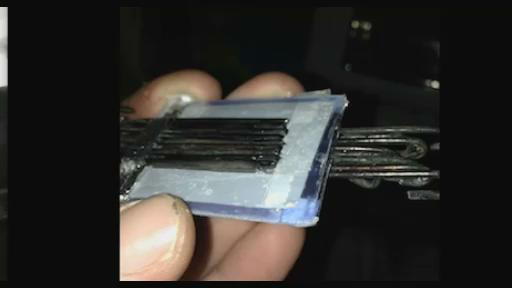
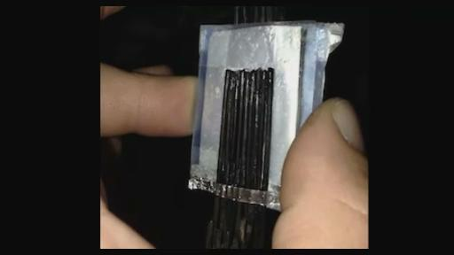
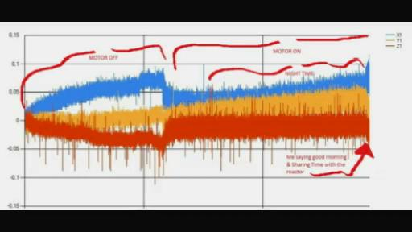
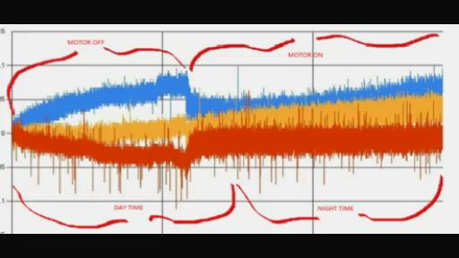
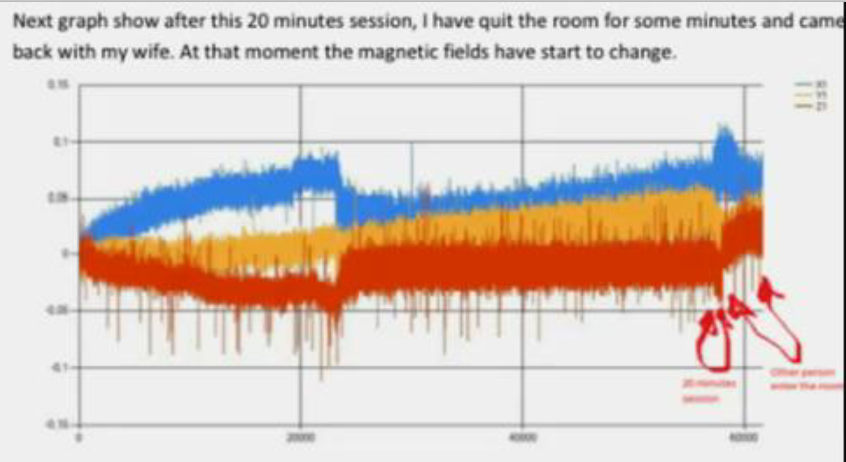
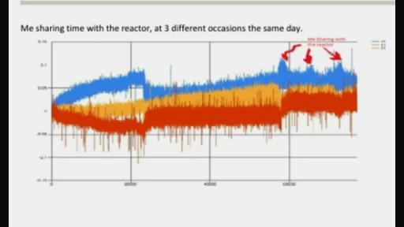
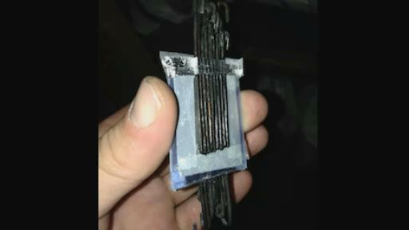
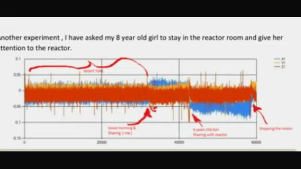
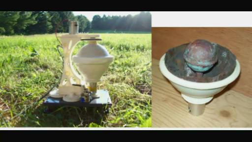

RICK：那生命之杯会如何呢？它们在制作的时候是不是有一些特定的技术或者技巧，可以将甘斯不至于从杯子当中释放出去，d当持续不断的往里面添加水的时候。
KESHE：没有。在这些杯子当中并没有制造甘斯。
RICK：在这些杯子里面，没有进行甘斯的涂层吗？
KESHE：它上面有纳米涂层，但是却没有甘斯的涂层。甘斯材料如果分离之后就会成为个体了。
RICK：好的，那就是说，在生命之杯上面没有进行甘斯的涂层处理，那么只是纳米涂层的处理，OK，那我现在理解了。
KESHE：甘斯它是一种浮动的材料，它就好像是这种胶状的你已经看过的那种状态，也很类似像粉末状的状态。
RICK：这些生命之杯它们有没有不同的颜色呢？比如说有白色的、绿色的和蓝色的之类的，我只是在想，有没有这种情况呢？
KESHE：不是的，这些颜色之所以存在，是由于我们所用的这些材料作为基础的材料，用这些基础材料来制造它们的这些材料。
RICK：好的，听起来很不错，那么从水当中，我们要把它置入到其中，我想可能是这样吧！
KESHE：是的，实际上是这样的。实际上是那种液体和它的成分我们把它植入其中，还有我们所使用的时间的持续长度，它的这个长度会有不同的影响和条件，我看到很多人都在做这方面的一些实验。我也看到你发过来的图片，就是VINCE制作的里面有很多的竖着的条在里面相互挨在一起，这是来自VINCE给我们做的这个实验，他想谈论这个事情，你创造了那个条件，然后想实现把它这种分离的情况。我之前也使用过这种清洗的薄膜，还有就是像他们在制作这个糕点的时候用的那种分离的装置。目前，因为我们面临的一个在制造电池方面的问题。实际上，我们目前正非常密切的来关注这个事情的发展，甚至
昨天的时候，我们还和意大利的团队坐在桌子前面来讨论解决这个问题的方法或者在它上面能够实现做不同的事情。由于这些纳米材料，我们试图去寻找一种方法能够实现持续的生产。这样的话，这些电磁的生产就可以成为，实际上就是成为完全制动化的方式来完成。或许我们在未来的几周内能够在日本的实验当中能够找到相关的解决方案，在他们那里的生产公司有制作方式。一旦我们了解这个方法之后，我们就会来分享它的制作方法，还有相关的知识，但是这就是我们目前正在关注的一些事情。在这个节点的地方，如何实现它的分离，就是电线节点的地方，那么在电线结点的地方，它们之间让它实现这种分离，而且不会出现这种相反的流向，因为有不同的方法来实现这个目标，整个的一个过程，就是现在我们开始来授权意大利和日本的公司。我们必须来找到它的解决方案，如果我们找不到的话，其他人就会找到这种解决方案，然后我们也会来分享这个方案，如果你找到了解决方案。
VINCE：凯史先生，你正在讨论那个图片吗？
RICK：你想让我来展示你说的那个图片吗？VINCE，你觉得这样做好吗？
VINCE：我觉得没有任何问题。
KESHE：当然想在私下说的话最好还是私下说，如果你们想要改变的话，因为你们之前说想在我们的网络上说这个问题。
VINCE：是的，我们现在就要来讨论这个问题，因为我们观察这个问题的时候，我想它是一种想法，让人们来试图去拓展其他人的一些想法。你知道有些时候他就需要这种做法，它是一种视觉的一个想法那么还有相关的一些解释，就是说利用不同的设备还有不同的方法，所以，你也看到了这个图片，那么你是否已经理解了它的结构？


RICK：没有，我所看到的就是你在里面输入了一些数字，还有在这个不同的电线和它有连接的其它的一些电线。
KESHE：是的，那么它看起来有点像是一些透明的塑料薄膜，我就没有理解它们是如何连接在一起成了这样一团的？
VINCE：好的，让我来解释一下这个图片，这样的话，你可以让我们知道你如何来理解这个情况。我们所有的就是它有一个电容在里面。
KESHE：你的声音总是断断续续的。
VINCE：能够听到我在说话吗？
KESHE：是的，可以。继续说吧。
VICNE：所以，它实际上是一个电容，是一种结构的电容，我们就从上面到下面来解释这个图片。在这个图片的上面你会看到有9个纳米涂层处理的电线，它放在了一块铝箔纸上面，这个铝箔纸放在了一片纳米涂层处理的铜箔上面，然后在这个铜箔中间有一块塑料，有一块这个纳米涂层处理的铜箔在它的中间，然后它是一个完全相反的方式，然后有一块铝箔，就是说在它的下面就有一个，然后就有另外的9个电线的也是经过了纳米涂层的处理，所以在这个结构当中，我所观察到的就是。
KESHE：让我来总结一下，你用了9个不同的电线彼此挨着，然后给它们埋在这个结构当中，然后你把这些电线放在了一块铝箔上面，在铝箔的下面还有另外的一块铜箔，那么这个铜箔它也经过了纳米涂层的处理，然后你在它的中间放了一块塑料膜或者硅膜来实现它的这个风格，然后你重新复制了同样的一个结构。
VINCE：是的。
KESHE：好的，继续说吧！
RICK：你在图片中所看到的，就是在其中一端，你会看到一些铝箔在电线的上方，我这样做主要是为了能够有一个比较好的连接，所以我可以把我的万用表和它连在一起，可以实现一个轻松的连接，而不会有这种经常出现故障的这种连接方式。那么首先我注意到的一个事情就是，最开始的时候它实际上并没有制造出更高的直流电，但是在后面我们看的这个装置当中，我们观察到了1V的交流电，所以我试图要做的就是我尝试着去做这个实验，它的一个目的就是它实际上就有些类似一种传感器。相对于人体来说，它相当于某种传感器，因为我可以来碰触这个电路的任何一个部分，和它连在一起就会增加它的交流电压，所以我可以在它的一侧拿着它的塑料，你可以在其中的几个图片当中看到我这样做，即使是这样，它任然可以达到2.2或者1.3V交流电，在这个万用表上面可以看到它有这些电压的交流电，然后在其中有一些要走向800。
KESHE：说要多长时间呢,它能在那坚持多长时间呢?
VINCE：它能够坚持的时间就是你能够拿住它多长时间,它就能坚持多长时间。
KESHE：你是如何来完成连接的一部分的呢?可不可以来解释一下呢?
VINCE：这种连接就是这个铝片，在两侧的这个铝片在图片当中你可以看到，在其中一次就有铝片的存在。它对应的另一侧也有这个铝片。那么在同样的这一块铝片它的上面都有这个纳米涂层，在经过纳米涂层处理的这个铜线。
KESHE：可不可以请你解释一下呢?就是这些铝箔，它们是否这两块铝箔之间有这种连接，还是说它们的这种结构就好像你之前提到的像是做蛋糕时的那种一层层的状态呢？
RICK：哦，它就像做蛋糕时一层层的那种状态。
KESHE:那就是说这些层本身之间没有连接喽？那实际上你所做的事情就是在这两块铝片之间来测量它们的电压喽？那么其中一侧有纳米涂层处理。
VINCE：实际上就像你说的一种三明治的一个结构。
KESHE：明白了，继续说吧。我之所以问的这些详细，是为了让所有在听你说实验的这些人,都能够理解你在做什么。所以呢,我所期待看到的这些交流电，我就觉得它们应该是来自于进行了纳米涂层处理的这个铜片上面出现的，由于在它们之间有这样的一个绝缘体或者说是叫电解质就产生了它们之间相互作用。这样的话，我的感觉就是它在释放的一方面就在获取，所以它就不会再现这种电极逆转的情况。我就觉得它是一种对风的这样的一种状态，在这个万用表面上面会出现这种情况，所以它应该是对它周围存在的磁场有所注意有所增加，就是说对它的这种等离子体的磁场有所注意，我就是这样来理解的。
KESHE：是的，但是我们可不可以来拓展一下这方面的知识呢？如果我们有摄像机的话我会把这种情况展示给你看。我们4-5年前也做过类似的实验。在2005年的时候，NASA他们就遇到了一个问题。实际上它不是NASA的问题，但实际上NASA是想理解当时会出现这种情况的原因。就是说为什么会在宇航员的眼睛里面它就经常出现这种闪光的情况，我之前在一些谈话当中也谈到了这个问题，所以在华盛顿他们就组建了这样的一个委员会来讨论这方面的问题。他们就建立了这样的一个研究的机构来解决这个问题，就包括在上层的太空当中的这个辐射将会如何来被这个阻止这些辐射，避免它们对人体尤其是宇航员眼睛的影响。因为在他们的眼睛当中会有这些液体，它会对这些液体产生影响。这样以便使它们不至于在眼睛当中再一次出现这种闪光的情况。出于这个原因，我就研制出了一系列的这种装置来解决这个问题，就类似你刚才所谈论的这个实验。实际上就和你刚才所谈论的这个实验的情况是非常类似的，我也注意到了在这些层当中的电流的出现。通常我们所做的,就是如果我们有摄像机的话，就可以向你展示出我们当时是如何做的了。它实际上就是人类能看到最长的钻石结构的这个材料，我从电池当中取了一个铜箔，对它进行了纳米涂层的处理。然后我也做了同样的事情就是在同样的电磁当中，把其中的铝箔也拿了出来，对其进行了清洗。然后也是像你所做的那样，用铝箔对铜线进行了纳米涂层的处理，把它放在这个铜片的下面。我们通过X射线对它进行了测试，我们注意到它能够获取吸收来自于太空当中99%的宇宙射线（辐射），然后把它转换成能量。所以我们现在所做的就是使用这种铜线或者你所提到的这个铜片。我们所用的是经过纳米涂层处理的铜线，这就会给你带来很高的交流电，我通常会把它放在一个能够折叠的盒子里面。我之前也向你展示过它，你所做的是正确的，你实际上所实现的就是能够去吸收部分的来自身体当中的一些情况。吸收来自于身体的部分的等离子体的情况，去对它进行一个冲击或者吹风，如果你去做这种测试，针对这个纳米铜线的话。你会发现它是一个非常有趣的实验，你可以保持这个万用表和电线之间的连接。然后你可以在有一定距离的情况下去给它吹风，我也这样做过，我当时就注意到在这样做的时候它的电压就会变得很高。那实际上就是一种能量，它相当于你转换的这种能量。从你身体当中的甘斯当中转换出的能量通过这个吹风的情况出现的，把它吹向了万用表的方向上，上周的时候我也做过这方面的实验。
RICK：当时用的这个反应器是，上个星期用我的带有铜涂层的枫叶瓶子的反应器（49:50 ??????bottle reactor with copper coated ????copper coated????pad ，不确定），在它里面进行了纳米涂层的处理。用到的是???在里面都是进行了纳米涂层的处理，都成为了黑色。在瓶子当中放入了黄铜管，在里面也放了两个电极，可以同时把其中的电压给驱出来。然后你刚才说的是完全正确，我也做了这种实验。就是通过这个铜管往里面吹气，我当时就想它可能是二氧化碳制造，这个并不是能量。可以是因为它才造成了这样的一些不同的情况，所以呼气对这个装置所带来的这个影响，它其中也会有一定的影响。
VINCE：是的,但是你会发现,它实际上并不仅仅所呼吸所产生的这种情况，而是仅仅是你的存在就会出现这种情况，
KESHE：当你向外吹气的时候，我想这两方面都会有这两方面的情况吧。部分地方来说，你这样理解也是正确的，就是说你本人的存在它也会产生这些影响，但是它不会有这么大的一个改变，当你去呼气的时候，由于就像我之前在其它的一些网络教学当中所解释的那样，就是说在肺部的这些材料它们如何改变，你实际上会释放出部分的材料作为一个甘斯来自你的肺部，就是排出了部分的甘斯到肺的外部。
所以由于它出现这种状态，它就会立刻被这些层给吸收了。由于它们处于同样的一个磁引力场的状态当中，这些铜线它们处于同样的，这些铜线它是你和这些材料之间的最先出现的东西，然后它就会吸收这些能量，实际上这种现象它会有很广泛的一个应用领域，你可以将这方面的知识更进一步的拓展，当然在这过程当中也是会获得很多的乐趣。那就是好像是我们在亲吻的时候，我们能够有多少的给予。这个就是我们之前所解释的这种能量，在之前的网络教学当中所解释的。现在你就可以通过物理的方式看到并且可以能够测量出你所释放出的这些能量的多少。就是说从一个身体到另外的一个身体当中的所转移的能量多少，就是相当于说你向这个铜线吹气的时候，吹气的这个速度，还有吹气的持续性，以及你如何去对它进行吹气实际上都会产生不同的读数影响。可以看到有的时候它能达到70到80(密尔：mil：千分之一英寸)但是如果你停下的话。
VINCE：我有时候会达到几百这个(密尔)。
RICK：是的,我自己这边做的实验有的时候也达到几百的这个数量,它的提高是70到80(毫升)，就是说从120到200这个状态。
KESHE：是的,这就是你们能够看到的一些情况，这样的话你都能够对它有更好的理解。它实际上就相当于是通过一个呼气就可以实现对能量的转移。部分情况下，如果你能够覆盖这样的状态的话，你可以看到有多少的能量，你能够吸收多少能量以及有多少的能量会释放到你的环境当中，因为它可以在某一个这个方式上对它产生这个阻隔，然后可以跟它到它的电压会有多高，那就是我们所说的。我们所做的这些测试就是使我们之间所说的这些事情的原因。就像我们之前所说的我们所吸收的80%的能量都是来自于环境的，因为这个测试可以这样说。现在你们以不同的方式来进行了测试，你们就意识到实际上你可以获取巨量的能量来自于环境当中。通过我们所做的测试的这个实验就可以让NASA他们制作做出保护宇航员的这种防护层。
VINCE：是的，我们从实验当中了解到从环境当中吸取能量，同时也可以为环境提供能量。
KESHE：当然是这样的。但是我们所给予的是以不同的强度表现出来的，而我们所吸收也是以不同的能量表现出来的，所以我们从中所吸收的是我们自己觉得合适的这些量，然后我们再把部分给释放出去，我们人类的皮肤有三层皮肤，它实际上就非常类似于你所做实验的情况，它是以一个相反的方式表示出来的，塑料相当于是另外的外表层皮肤，铝片相当于中层的这个皮肤，而纳米涂层处于内部的这一层相当于内部，它利用这层把它转换成了GANS，然后把它给注入到了淋巴系统当中，整个结构实际上是非常有趣的。其中一个原因在未来的时候我经常说科学家就会测量出这个淋巴系统当中的这些强度，在人脑意识之外的这一部分是完全不同的，如果你按照我们所做的这些测试的同样的原理进行测量的话，如果说之前有摄像机去拍摄整个过程的话，之前也向我们的知识寻求者展示了这种情况，他们就看到了这种三层的金属片，
VINCE：你会对它进行一个增加还是降低。
KESHE：这部分取决于你把它放在哪个器官上，身体哪个部位上，取决于你当时的所处于的情绪状态，还取决于这些材料的周围环境，它实际上相当于你所做的实验在更深一步的实验。是的，它取决于它处于什么样环境当中。
VINCE：它取决于处于什么样的一个，我就想到了煤矿。
KESHE：是的。这取决于它们在什么样的环境中，包括他们所使用的什么样的材料。
RICK：凯史先生，我也在想JOHN的朋友他们搞出了一份报告，KESHE先生你有没有看到了他们做的这份报告呢，我把它发出来了，我想你会对这个报告的内容非常感兴趣的，他的报告是有关一个反应器，他用三个方向来对这个磁场去进行测量它的数据，因为这样测量经历了一段时间，然后反应在了图表上面，在这个过程当中，如果有人进入到房间的时候，他的小孩或是他自己，然后他如果有一种想法的话，你就可以很明确的看到它的磁引力场一个数据的变化，从他所制作的非常精美的图表当中就能看到变化，我可以把这些图片发送到我们在线的LIVESTREAM频道上。
VINCE：这应该是一个不错的主意，那么我想KESHE先生会非常感兴趣的来看到这些图片和这些文件，这个效果非常不错。

（最左侧停止电机，最右侧箭头为重新启动电机，蓝色是X轴，黄色为Y轴，红色为Z轴）

（左括号表示白天，右括号表示夜间）

(译：20分钟后，在离开房间一段时间后再次和妻子回来的一刻磁场开始发生了变化，见红箭头标记处)

（用同一个反应器，在同一天内3个不同场合的变化，见三个红箭头）
KESHE：别忘了我们之前在和知识寻求者在一起坐在反应器前面的时候，就做过同样的事情，我们就看到了同样的情况。
RICK：是的，是这样的。
KESHE：实际上我们之前也对知识寻求者在这方面的实验做了一些纠正，在他们去过暑假之前就对他们遇到的情况做了一些纠正。当然实际上也是通过同样的原理，在实验室当中我们有三个窗户，一个是朝北的，两个是朝东的，这取决于太阳从那个方向，阳光会照进实验室，我们在白天和晚上的时候就会看到有不同的数据变化，然后我们对这些状态进行了一个纠正。因为在一个非常阳光明媚的日子，他的这个数据和在晚上时候的数据是不一样的，只是在完全有这个环境所影响的这种情况下影响也是不一样的，所以我就改变了很多的这种读数，就是在白天早上和晚间部分的数据，在白天的时候把这些东西放在一边，这些辐射照射进来之后会产生一定的阻碍，然后我们对它进行测量的时候它就以这种交流电的方式表现出来，这些能量它是来自于外部的，或许也来自于你的身体当中的，而这些能量作为光子或者说类似像宇宙的射线能量，当它进入宇航员的身体当中的时候，在他的这个大气层表层的这个地方的时候，当他们再出去的时候，即使他们有了目前的这种他们所制作出的各种保护层状态下，就在现在的天空当中的这些国际实验室当中，他们仍然会去吸收大量的高辐射，但是正如我在其他谈话当中所提到的那样，随着你拿着这个装置和这个电压进行测量的时候，会看到一个3W的电压，实际上它就是所形成这个辐射的电压，你需要去测量它的电流，因为电流和电压是非常不同的一种情况，它的电流会非常非常低，它的这种情况问题就是（VINCE：是的，它会非常低。）它的问题不会出在电压上，他的问题就会出在电流上，也就是这种非常低的电流，就非常类似像人体当中的神经系统，驱动神经系统运作的电流是非常低的。
VINCE: 我看到最高的电流呢就是25毫瓦。很抱歉，应该是微安。
RICK：是的，非常非常低的。
KESHE：是的，我们的身体的运作系统绝对不会是在上千瓦这样的状态下运行的，我们的神经系统就是要在这种很低的状态下运行，我们为什么要把这个装置提供给NASA？为什么这个人要为NASA做研究，这个项目的科学家他是华盛顿大学的一位教授，这样做的原因就是这些场体随着它们进入到每一平方米的状态下，它会有每一秒当中，现在你的人体有上百万的平方米，相当于每平方米中每秒当中能够获得这些进入的辐射量，部分的这些辐射就会被我们的皮肤所吸收，它所吸收的是辐射的一部分。然后呢你就会有一个大脑的结构，这种辐射会穿过大脑的结构，这样这些辐射当中的一部分就会由大脑所接受或者吸收，然后其中的一部分无论剩下多少，它没有直接的进入到眼睛当中，它会进入到眼睛的液体当中，这其中的一部分就以光子的形式出现了，然后你就会看到它像闪光和光亮这种情况。其中的问题就是这些辐射如果你不在这种太空当中阻止这些辐射的话，那么很快的就在你的工作当中他们实际上就可以利用他们所创造出来的电压还有非常低的电流，最终会导致许多的人体的各种机能上的障碍，还有包括心里上紊乱的情况，因为它们创建了这种电流，而这种电流实际上是大脑的情感这一部分需要用到的电流，然后人体的具体的物理形态这一部分，就将这一部分认为是来自情感这一部分的能量，并对其做出相应的反应，然后这种非常低的电流就是情感的一个触发，就需要被当作是信息指令的一部分发送到物理身体结构当中的其它部分，以便使其成为各种动作，当这种巨量的信息突发的情况出现之后，就像我之前解释的那样，在你的头盖骨后面的部位这里面有个开关，实际上就是一个电容，相当于一个阻隔器，相当于一个中断器。如果有足够大的量的信息从这里通过的话，相当于在这个地方，在脊椎骨的连接的上面，是一个开关的位置，它起到一个开关的作用。由于信息量太大，它就没办法来承受这些信息，然后它的开关就出现了关闭的状态，这个时候就会出现人体的一个昏迷的状态，如果这种状态持续不断地反复进行的话，你就会出现那种帕金森的症状，就是那种很紊乱的受到震惊这样一种状态 ，就是很紊乱休克的状态，这要取决于不同的情况。所以，这也是在健康领域所面临的一个问题，它的原因。我们对昏迷这个领域也有过很深入的研究，包括对于多发性硬化症这方面的研究，在ＡＬＳ肌肉萎缩还有其它的一些因素，都进行了深入的研究。这些都是由于你在这样一个非常小的装置中所做的实验所能够涵盖的一些内容，就是说利用这些纳米涂层的处理它会吸收一些能量，你可以看到高的电压，还有非常低的电流。在太空中，这也是为什么很多的飞行员，他们就从现场当中被送了出来。我们很多时候看不到的那些俄罗斯的宇航员，他们送他们的现场中被送出来。已经不在公众的视线中了。最初的这些宇航员要在他们的实验室中要进行６个月左右的训练。他们的身体和大脑所接受这些辐射量最终会转换成信息，最终导致他们产生精神上的紊乱。所以你通过一个小的实验测试就能够理解这一切。能从小的实验中体会出我们凯史基金会在这方面的研究是何等的深入，以及研究方向是什么？因为这种非常低的电流，这些电流在这样如此小的状态当中，实际上相当于是我们情感这部分的电流向外释放，就以等离子体的状态一样向外释放给人体的物理形态的这部分当中，以便能够让它去进行各种工作或者是动作。还有我们的人体和大脑这部分也是，我们大脑的一部分，它也会接受这些指令，因为它能够接受这些指令和情感这部分大脑当中的这些指令，它就能够匹配，就把它当作是一种指令并且将其予以实施。
VINCE：那如果这样的情况下，用我们所做的实验小装置，当我们去捕捉，去观察它的电压的时候，实际上就象你刚才所说的我们能够观察到从它的在里面所接受到的在那个水平上的一些能量。它难道不就是一种方式能够让我们来去除这些额外的能量，把它调整到正确的能量上。
KESHE：但是我们要把它用在一些特定的健康领域当中，你所涉及到这些部分，实际上是属于我们医疗领域当中一些情况。我们现在也正在进行教学和研发的过程中。你需要理解的就是你没有办法释放它，你如果没有办法去释放回它所需要的那种相同等量的能量的话。那样的话，它就会进入到你的内部，从你的淋巴系统中去提取这些能量以满足它自己的需要，所以这是一种非常微妙的情况。
VINCE：是的，它可能会去除一些本来不应该去除的东西。
KESHE：是的，是这样的。因为你可能会创造出不同的错误的这个环境。所以这也是为什么像ELIYA这样一些医生，我们希望有更多象ELIYA这样的医生加入我们的基金会，这样的话我们可以以一种正确的方式把这些知识传授给他们，他们就需要理解这些东西它的结构。一定要理解这些东西才行。我们未来将要面临的那些问题。就好象我们现在已经所看到的那样，包括伊万他也在我们这里进行的工作过程中所看到的问题，就是说我们需要很多在医学方面有着丰富经验的这些医学界的人员，就像伊万他们那样，他们有丰富经验的这些专业人士，他们有丰富的经验来制作一些器械一些装置。因为像ELIYA这样的医生她就不会去制作一些器械装置，但是像伊万这样的医生他能够理解一些装置，从一个方面转换到另外一个方面的整个的过程，然后可以制作出一些相关的装置，这样的话就有能力和知识来创建出她心里面所要想要实现的这些装置，这也是我们未来将要面临的一个问题。我们在这个领域做了很多的工作，我想。
VINCE：之所以伊万能够完成这些工作，我想就是因为他是牙医的这方面原因吧。因为这样的话，他就能够理解很多器械方面的事情。但是呢，
KESHE：但是，你也需要有外科医生，很多的外科医生和牙科医生的感受是一样的，这些外科医生他们也会做很多的这种类似像艺术方面的工作，比如说雕塑这类的工作，因为他们有着一双非常灵巧的双手来制作一些东西。一般的医疗工作者他们很少会有自己工作领域以外的这些兴趣和爱好，但是你会很多的牙医和外科医生他们就有这样的一些的爱好去做各种各样的事情，因为他们已经习惯了这样的一些做法，他们有时用这样的一些方式来测试自己的能力。我也非常高兴能看到你所作的这些实验，把这一切都能够组织好，然后做出相关的这些数据的测试。我也看到RICK他也在做这方面的实验，他就把这些东西传送给我。我想这是时候来更进一步来阐述这方面的情况，来分享这方面的技术，这也是你所做的这些实验正好跟我们医疗领域这一块的应用有一定的匹配，这是非常重要的事情。
这些知识寻求者所做得这些事情的方式，这些实验实际上也是非常完美的。因为你可以把结构给带进来，然后我们可以去增加他所需要的这些知识，所以它就不再是一个单向的系统了。请让我把这些话说完，你所展示的这些东西实际上就已经创建出了人类的皮肤，如果你能够将液体放到你的这些纳米涂层处理的这些层的一面当中的话，你会看到甘斯将会以一种非常美妙的方式被释放出来，而这些甘斯就会变为，如果你能够以一种正确的方式制作的话，它就能变成氨基酸。这样的话，它就和氨基酸的等离子体具有同样的能量。所以，氨基酸的产生就是由皮肤下层的地方所控制，它是由皮肤本身所制造出来并由它来控制的。所以，如果你能够进一步去进行实验的话，如果你可以把你的这个装置给它倒置过来，然后在其中的一侧，它会创建出一种胶状液体的状态，这种胶状的液态的情况，你可以观察到，你希望从中获取到什么样的甘斯。然后你就会明白创造物的整个的过程了。
VINCE：是的，我正在理解这个过程。
KESHE：是的，你会看到这个过程，然后你可以把看到的东西写成报告让我看到。但是你也可以做一些事情，如果你能做的话，你就在那个层的上面放置一个温度计，然后来测量它的温度。
VINCE：噢，我做过这个事情，我会去把我所看到的这些情况汇报出来。但是，目前来看，我还没看到什么特别的情况。我在纳米涂层上用了我自己的一滴唾液来反应，放在这些纳米涂层处理的电线或者铜片上面。我确实看到了在这个时候，看到了一个非常剧烈令人激动的直流电压的提高。
KESHE：是的。因为你把这一切都转换到了等离子体的状态当中。之所以你能够在你这个三明治的这种装置当中看到交流电的存在。原因就在于，你就把等离子体的直流电的能量给它转换成了交流电，通过在这些层之间所存在的电阻所实现的，交流电仅仅会在由物质所存在的层面下才会出现。只要你看到这种直流电转换成了交流电的情况，没有交流电的增加，那就说明实际上都是由于等离子体的状态的情况所产生，所以实际上所有的能量的一种转移都是由等离子体相关的，和一个等离子体的这个状态相关。
VINCE：是的，因为这里面有人体的液体的流动。所以基本来说它应该是一种非常纯正的等离子体存在。
KESHE：是的，这也是你为什么会看到它的提高的原因。所以需要去理解的是它整个的过程。
（第二次翻译截止01：10：00）
VINCE：是的，我之前也用到过可充电电池来给这种装置来充电。
KESHE：是的，如果你用到了可充电电池的话，因为在可充电电池中既有直流电容量也有交流电容量，所以当它们以等离子体的形式吸收了这种直流电，因为在电池中的这种物理物质的结构，它们就会把其中的部分转变成交流电，你可以利用这两种电的形式，实际我们在几年前就已经通过等离子体反应器展示了这方面的能力，就是反应器有这种在直流电和交流电上都可以运行的这种能力。
VINCE：是的。我想布莱德也想就这个问题发表一下他的观点，我实际上之前做这些实验的很多想法都是来自于布莱德，我在做这个装置的时候，很多想法都是通过布莱德那里得到的，所以我想他也会利用这个机会来谈论一些这方面的情况。
KESHE：你们所做的这一切都是在非常棒的一些工作，也非常感谢你能够以这样的方式来做这些实验，并且能够和我们大家来一起分享这些实验的结果，它在很多领域里有非常巨大的运用前景。
BRAT：不用客气，不要客气。
KESHE：尤其在医疗方面有很广泛运用前景。
BRAT：我只是想说一下有关我为什么会利用我们已经做的这个实验结构，为什么会想到利用这种结构，在纳米涂层的内部我用到了这些电线的话，因为我没有像VINCE使用的这种铜箔、铝箔，但是相当于能够在这些薄片上生长出来的一种结构，它在这个电荷之间这些形成一种绝缘的工具，或者叫绝缘体，实际上它的作用就是能够阻碍来回流动在其间这些电荷，改变它上面的结构，改变它所能做的事情，在它上面铝箔薄片和它外面有一个连接，我之前做了叶片的一个装置，
我这样就是做的目的只是连接起这些线能够让这个能量引入到小的装置中，然后将其纳入到金属中。
KESHE：你能重复一下吗？
BRAT：好的。当然也可以我有一个非常薄的纸盒，然后我在它中间把它切开，然后在它的外面连上这个纳米涂层处理的铜线，但由于当时没有铜箔或者说这种薄片，我之前会用到一些经过涂层处理的薄片，它就可以做成一种能够绝缘这些电荷的结构，使它们避免出现上下波动的这种情况，使这些电荷不能在上下或左右这种波动，然后我在它的上面就安置了一块铝箔，然后在这个铝箔两侧都安装了铜线，这样就可以把能量给吸引进来，并且能贮存在这个装置系统中。
VINCE：但是它仍然是实际做到同样的事，因为它会有同样的效应，是的，它看上去非常棒。这是为什么我也开始做类似这样的一种结构的装置，这是利用了金属薄片的材料，甚至就是利用了这些切割的铜线，比如我用的这些经过纳米涂层处理的铜线，就像你在它上面所看到的那样。只是我所做的第一个装置的样子，我把它切成了三五段

然后把它们给包裹在10个薄片中，然后把这个经过纳米涂层处理的铜片、铜线就在它上面缠绕的看起来像是一个完全一样的结构，但是用的却是铜线而不是铝箔，但是即使这样仍然会获得到这个交流电的电压，这样的结构感觉就是只要你还有这种结构的话，你还有这种纳米涂层处理的材料，同时也有没有经过纳米涂层的材料在其中的一侧，在另一侧也是一样，就是在它的中间有一个电解质，就是绝缘体的存在，看起来好像你可以改变调整它的结构。
KESHE：我觉得我们还是不要说得太深入，不要说得太深入，我们还是来以不同的方式来讨论这个事情吧。首先我想我们应该找两块不同极的磁铁把它们放在一起，需要找两块环形的磁铁，它中间有孔洞，也可以找两个中间没有孔洞的圆形的磁铁，然后可以把两个北极或南极相对着，最好的结果是把两个北极相对应在一起，然后就把这两块磁铁放在一个比较舒适的位置上，这样的话这两块磁铁既不会跳跃或飞出去，有一个比较舒适的状态面对面地放好，然后你要拿一块铝薄片、铜薄片，你就把薄片就放在这两块磁铁的中心的位置上，你会发现这两块磁铁会跳起来再粘在一起，你可以去测量它在这个过程中所形成的电流，你可以去测量电流或把它们设置好看它们有什么样的效果，因为你实际上已把等离子体磁场转换成了交流电的电流，因为这个时候它们就需要来穿越或穿过一个物质，这种做法的一个问题就是我现在要往回走两步，对你来说它是一种比较正常地对两个磁铁的一个理解，你来观察这事时，我认为它是两个相同极的磁铁面对着对方。但同时，在磁铁背后的磁场实际上在一种运动中，也是趋向于要运动到它另外的一侧过去，在使用矩形或正方形磁铁和圆形的磁铁相比较会有一个很巨大的差异。对于这种环形的这种磁铁，它就会存在一种单向的一个磁流动在它们相互作用的这个表面上。但同时，你会看到这种相似的极仍然还保持着一种希望连在一起的这样一个动作。所以说在这两个磁铁之间你所看到的并不仅仅是这种排斥力，同时，也存在着在这块磁铁的背后和对另外一块磁铁的正面的一个吸引的一个力量。所以，这里面存在的是一个等离子体的一个作用。实际上这也是当今的物理学界的这些人一直都忽视的一个现象。他们只会去观察其中的一面。
VINCE:：是的。他们只是观察这个磁铁的周期。
KESHE：是的，需要开始来理解整个的一个过程，这也是我之前一直在解释的事情．
BRAT：我有一个问题。
KESHE：还是让我把话说完吧。我觉得这个地方还需要我们再更进一步的来增加我们的这些知识。因为这一部分，这一块是很重要的。那么当前我们有这样的一种很大的困惑。就是说地球的这个磁场从北极到南极的这个过程当中，这种从北极到南极这种磁场流向的变化是从什么地方开始改变的呢？实际上是没有地方来改变。因为它是一个流动的状态，因为人类无法理解磁铁的这种流动性，他们通常都能认为在地球的中部的某个位置上，那个南极就变成了北极。但实际上并不是这样的，它实际上仍然还是同样的一个磁场的流动，随着它进入之后，就会从另一端出来，它并没有在中间的这个地方做任何的变化。这也是当今物理学界另外的一个没有搞懂的地方。实际上它和你的磁铁是一样的，这个磁铁它实际上也是没有一个穿越点的一个位置，一个点位到负极或者正极。就是说从北极到南极的过程。这要取决于它的这个流动在哪里会得到一个提升。当你看到了这个改变的这一点的地方，就是这个磁场提升增加了它的自身的这个地方，就是通过吸收进入到这个材料的场体来实现的，或者说如果它有一个中心环的话，它会在这个等离子体当中，如果说你有一个中心空洞的这个磁铁的话，所以从现在开始，当你来使用这些东西的时候，你可以去观察你所创建的这个结构。你可以在上面放置一个纳米涂层处理的铜片或者是铜线。然后在上面放置铝箔，然后再放置上这个纳米涂层处理的铜箔在它的后面。实际上这个时候你所创建出来的就好像是这两块磁铁所要做的事情。你实际上在这个状态当中设置出了这种＂涡流＂的情况，但是你的这个"涡流"它是从两方面都可以的，就是说从正极到负极，或者是从负极到正极都可以的。因为就像我们所说的这个纳米涂层实际上是一个原子级别的结构。做为等离子体的原子级别的结构，相互的设置在那里。它们都可以成为北极，那么它们不能够都是北极呢？其中必须得有一个是从北极然后到南极，所以无论哪一边都会有像它释放的这些能量。然后在这种情况下你就可以来拓展一下在这方面的知识。你就可以理解你所做的那个三明治的那种装置其中所包含的这些道理了。你实际上拥有纳米涂层材料所形成的两个等离子体。它们本身是等离子体，但是却需要被设置在物质的材料上面。然后在它们之间还设置了这个铝箔，在一种化学的作用下，就会产生从这个材料到这些片上面的一个沉淀的情况。这也就是为什么这个电池会耗尽的原因。当这个化学作用结束之后，你就把电池扔掉了。但是用这些有纳米涂层处理的结构，你就再也不用把电池扔掉了。因为它实际上就是一个现实版的三维的磁引力场的流动传递。这就和把这个磁铁放在它两端所形成的效果是一样的。然后你会说它这个就叫作＂涡流＂。实际上在这种情况下你会看到有持续不断的涡流的产生．你现在明白了吗？
RICK：是的，明白。是的，那就好像是一块磁铁，它本身的能量在某一个时间点上可能也会耗尽吧。
KESHE：从来都不会的，这绝对不会发生的，因为你的纳米涂层它是具有一种动态的效应。它会从它的周围，包括它的前后都能够吸收到你没有注意到的这些能量。它这面并没有面朝着铝箔的那一面。所以换句话说实际上它是从外部获取的这些能量，然后把这些能量又给它输入到了内部。然后当你去（话没说完，被VINCE 打断）
VINCE：那么当你把它的这个物质从中间拿走的话，那么实际上是因为你有两个相互作用的这个场体，相当于在物质层面上有两个相互作用的场体。
KESHE：是的，现在你明白了．
VINCE：是，我现在好像明白了。那么这样的话，哦，抱歉，这就让我想到了一个另外一个问题，因为我还制做了另外的一个装置，其中也用到了很多的电线，是以不同的形式缠绕的，但是它其中有放了一些水，我之前也放了一些有关这个装置的一些图片，我不知道你是否之前看到过这些装置的图片。在这个装置当中我也用了一块万用表来显示它的正负极的一个变化。我不知道在物理学当中，如果你想去测量这个电子的话，是没有办法能够让电子在向一个方向上运行的同时，又让它向另外一个方向上运行。所以，这就相当于需要在这个装置上做一些额外的这些设置，在这个装置当中就会出现等离子体．这样的话再把这个问题带回来，带到我们现在讨论这部分上。就是说这个电解质的这个绝缘体，它既可以是用塑料的，也可以是用一张纸来代替，或者可以通过水或者是空气来代替。
KESHE：可不可以请你重说一下？
VINCE：我讲到的是这个绝缘体的物质，它可以是中间用到的一块塑料，就好像是我做的这个三明治中间的一层，它也可以是一张纸或者任何其它的这些东西。
KESHE：是的，任何物质都可以。
RICK：如果用喷上一层硅胶会如何呢？
KESHE：你想知道一个更好的材料吗？在这里面。你想看到这种等离子体形成的电流吗？
RICK：我想这个问题的答案就应该是？
KESHE：（笑了）你可以拿一个纳米涂层处理的铜线或者一片铜箔，然后上面覆盖上甘斯之后，再用一个纳米涂层处理的铜片盖在上面，然后你再去测量一下。
RICK：噢？听起来有些像是甘斯作的三明治了．
KESHE：对，是甘斯的三明治，然后你就会看到它一部分的这种转换，在宇宙之间的这种相互的作用，你就会明白其中的这个道理了。然后你就会理解这宇宙当中的这种连接。我们在宇宙之间的这种相互作用的过程当中就看到了这种情况，部分的情况下可以看到在我们的大气层的上表层上面，就会看到出现这样的一种相互作用的现象。
在一些气态的行星上面，它拥有这种纳米甘斯的这些材料的时候，它的这种六边体的形状就来源于这些材料的一个平衡的一个状态，来自于这些物质的平衡所形成的。如果它是一个透明的效果的话，你就会看到在你甘斯其中的这种六边形的形态。他们本身以六边形的钻石结构表现出来，主要的目的就是为了能够创建一种稳定性，在未来的时候，科学家他们能够在深远的太空当中旅行的时候，你会看到在两个比较靠近的星体之间会看到这种情况，那么这里面的知识目前对人类去了解可能还有一些过早，但是当你到两个非常接近的星体之间的时候，等离子体就会在它们交界的地方创建出这样一种状态，这些东西它后期在未来的时候就会形成我们所说得一个通道，叫磁门通道（gateways）这样一种装置，未来在太空中会用到。但是如果你能够把你今天所学到的这些知识再能够进一步扩展的话，现在你可以再安置一个纳米涂层，然后制作足够多的GANS，你可以试图试着在这个铜片上面放不同的GANS，如果你用两片铜片的话，你就会看到它们之间的相互作用，这样的话就形成了一个GANS的铜片，在它们之间像做一个三明治。这样的话就不会有任何的物质的干扰，这个时候你就会获得这个等离子体的电流了，这些等离子体的电流它们拥有的最大的能量，它们的能量是极其巨大的，你还是需要找到一种方式去测量它，需要这样做它所能承受的这个级别，要使用一些就像我说得不要用铜，要用其它的这些材料，要用其它的一些东西制作的GANS，不要用铜。其它的GANS，因为它们之间的这种不同的将会产生巨大的电势上的差异，那么在这个不同层GANS层之间形成一个巨大的电势的差异，你就需要制造出这样的一种电势的这种差别，而且是一种最大的电磁场，那么你在GANS当中所所制造出来的电势差呢，它就已经在那里面了
VINCE：是的，我想说我们在20秒钟之内谈完了这个事情。
KESHE：是的,你要说什么（VINCE插话）继续说。
VINCE：抱歉打扰到你，我们要回到之前的那个事情，就是说阻止其它的一些场体进入到纳米涂层的等离子体的场体当中，然后可以允许更多的其它场体强度的等离子体的场体进入到这个纳米涂层当中，这样的话它会提高这个等离子体的强度而不是被扩散出来，
KESHE：你可能一看到到目前为止你比较适应观察这种物质层面上面的这种等离子体流动，而今天你就学会了来处理等离子体的这个电流的情况，还有等离子体的电流，当我说到等离子体的电流的时候，正好在我的妻子她把这个早餐送过来了，而且她笑得快不行了，没关系。等离子体电流实际上和这种材料的这种情况是完全不同的。
RICK：说到这就和我想提的另外一个问题就有一个比较密切的联系了，这个问题就是JOHN的朋友他们正在用一个反应器来做一些实验，然后这个时候有一个小女孩就走了过来，我们就注意到在测量的数据上面看到磁场的一个逆转的情况出现在了这个反应器上面，我想他妻子进入到这个实验场地的时候也会发生同样的情况（这伙人笑了）所以我在想他在运行反应器的时候会不会形成一种因素呢？

（图示中出现了逆转的情况）
KESHE：是的，是这种情况，你最终会理解更多的情况。你可以在做实验的时候放一条狗过来让它在里面走动，然后你来观察一下会有什么样的一个变化，其实我们KESHE基金会在这里面就养了一条狗，然后这条狗就经常到处走动，当这条狗来到我们实验室的时候，他在走动的时候我就会特别的留意这些情况，看到它做这些事情的时候也是很有趣的，包括它在场的时候对这些读数的影响。是的，我们是确实创建出了这样一种包括是逆向的一种影响，因为它里面有雄性的和雌性的，
这就是等离子体的一种状态，我之前就见到过这种情况，眼睛，耳朵，感觉，明显是上没有任何作用的。你的热量是可以被测量出来的。就是在没有借助人体情感这一部分的情况下能够测量到什么样的一个状态，所以这个探测器就检测到了场体的改变，就反应出了是在场体进来时候的状态，我之前也做过这方面的测试，这些测试是很有意思的，在某种程度上来说它是一种正确的做法，这要看他是如何设置的，但是可能今天我们就在科学领域就实现了一个很大的一个跨越，就是说你知道了如何能够去创建这种等离子体的电流，这些电流有如此大的能量。如果你能够去利用这些能量的话，在很多程度上来说，它就会成为你能够想象到的和所知道的最强大的一种发电机了，但是你需要如何来改变它的这些能量，把它改变成为一种你能够转换成物质的层面上你能够了解的那种能量和使用的能量，转化实际上是一个理解的过程，你需要理解就是它能够做出那些事情，能够完成哪些事情，还有它能够给你带来什么样级别的能量，这也是其中一个理由为什么当佐藤在福岛的这个时候所使用的那些材料，你也注意到了在放射性这个放射性元素的这个含量即刻的这个含量降低的这种情况，它不是一场魔术。这种情况我们实际上在三个月之前就已经做到的了。伽马射线还有场体的强度，还有这些纳米涂层就可以转换这些吸收到的场体。
RICK：现在在我们现场交流的聊天平台上有一个问题，这个问题就是如果把CO2的GANS用作成为这种三明治中间这个材料的话，把它作为铜片之间的这个层会有什么效果呢？
KESHE：你当然可以使用任何的东西。为什么不能呢，对啊。
RICK：你之前提到了使用铜之外的这些GANS，所以我就想到了用CO2 GANS。
KESHE：当然你可以用任何类型的GANS。
BART： 晚上好，KESHE先生我有一个有关磁铁的问题，一个星期之前的交谈当中你提到就是我做的这个磁铁的一个组合的情况，当我把一块磁铁放在它上面的时候，它就形成了一种比较小的这种状态的一种漩涡的一种情况，然后它的那个旋转看上去是能一直转下去的一个情况 ，我在里面放的是一个球形的磁铁，然后它就持续不停的旋转，这个磁球在中心不停的旋转，看上去好像是会永远的转下去，所以我想对这个小装置做一个实验，想知道您对我的这个小装置有任何的建议呢 ？
KESHE：这不是一个很好的装置吗？你可以试着去理解它就会有这种旋转的情况，要试着跳出专注于物质的这种精神分裂的一种状态，它就在于一种状态中，要理解为什么会是这样，为什么会旋转，它也有自己的南北极。它是球形的，也就是你跟我说它这个旋转的情况，实际上这也就是为什么在宇宙的星体当中，它本身会出现这种旋转的情况，由于环境中的磁场，你创造了一个环境，然后放入的这个磁铁里面本身它就是带有等离子体的性质的。
它实际上在持续不断的在追寻着下一个连接的平衡点，这样就会产生创建出这样一个环境。这也是我之前提到的如何在反应器当中没有使用到任何真空泵的状况下实现旋转的方法，所以我在上面放着了一个磁铁开始旋转，你会知道你能够理解试图去把你的知识转换成在甘斯和物质之间去转换，所有的这些甘斯你看到的，所有的氧化铜的甘斯，你看到的所有的二氧化碳甘斯，如果你把他们都放在显微镜下放大去观察，你会发现它们都在一种旋转的状态下运行，他们都在疯狂的运行旋转着，因为在它们附近这些材料和其它的甘斯都是以磁引力场为基础的，所以它们会永远的旋转状态当中追寻它们的平衡，这也是为什么我们的宇宙天体是如何旋转产生的一个原因，就像甘斯旋转一样，因为当你把磁铁放在这个装置当中之后你看到这些东西在里面像疯了一样不停的旋转，现在你可以在里面放一个星体或者星系，你也就会明白为什么星体星系会旋转了，你设置出一个星系在里面。你也就会明白为什么星系会以目前的状态去旋转了，它们都是动态的，现在你再把它放大到整个宇宙当中，这就是我们的宇宙为什么是动态的原因，这里面没有任何区别。
BRAT：如果我在磁铁的上方放置一些甘斯的话，放在那里是不是会看到更多的效果或者效应呢？
KESHE：你自己去试一下观察一下就可以了。你可以去试。
BRAT：好的，我会去试。
KESHE：试着把这些甘斯限制在一个透明的球体当中，然后调整它的磁场强度，可能不会发生任何情况，就因为你没有调整到它的磁场的频率，或者它的那个状态当中，如果你尝试调整到那个磁引力场状态后，你会看到里面所有这些东西包括液体都会像疯狂旋转的效果，它实际上就是我们星球内核的旋转的效果，就是在我们这个星体的中心内核的旋转方式，实际上你已经进入到了造物最核心的地方，但是你要进一步的角度理解它，不要仅仅是复制，不要只是看这些材料。实际上你已经进入到了一个完整的结构当中了，这也是为什么我们把实验室里的这些反应器上的电动机关闭的原因。因为现在，我们现在有三个反应器围着一个中心的反应器，所以没有任何的场体是正好相等的能够找到这个平衡，所以一直表现出的就是一个场体推动另外一个场体，所以我们实际上是一直处于动态的环境当中，奇怪的情况就好像我们在谈论这个事情，因为我们现在已经有了三套设备，反应器的里面也装置了一些甘斯材料，它的能量电力每一天都在不停的降低，所以现在它运行在1.2-1.4V的状态上，或者1.3V的状态下，今天可能到了0.81V的状态，随着我们给中心内核输入，它会提供更多的场体，甘斯就会去吸收这些场体，在这个过程当中最终就会达到某一个状态，就到了一个状态就再也不会从电力供应当中获得更多的能量了，这种情况只会出现在接近另外的反应器装置的那两个反应器上，反过来它会使另外的反应器处于一种平衡的状态，你要试着去理解它的结构，今天你就理解了整个宇宙中的旋转是如何进行的。
但是你是以这种材料的状态来做的，当你在物质状态上做这些事情的时候，你会看到它就会涉及一些频率和交流电的情况，因为你转换了等离子体磁场的一部分能量，通过这种旋转的方式，就会持续不断的转换成交流电，因为它需要转换成物质才能实现相互作用，它实际上并不是物质，而是处于物质这种场强级别上，这样才有可能与球体实现相互作用，一部分是由于场体的相互作用，另外一部分当场体的相互作用的时候，它就会来释放出能量进入到球体的物质当中，然后你就可以明白如何简单的就能够制作这个系统而不需要电机，电动机是人为制造出的以便实现人工旋转。现在利用你所做的实验如果你能够用甘斯来做这个实验的话，那么你就能够理解整个宇宙是如何制作它自己的的电动机（初始旋转力）了。下一个问题。

(JF制作的反应器)
VINCE：我确实还有另外一个问题。LUMIL你继续吧。
LUDMIL：这个问题感觉就好像把我带回到了远古时期，差不多一年之前，我在做纳米涂层的线缠绕的时候，我们一直在考虑它的沉淀或降雨的情况，尝试理解的时候就是我们平时总说糖尿病患者要用杯子进行单独的治疗，利用电容针对每一个个体进行处理，基本上当时想去制作一个传感器，相当于血液的等离子体的场体，只是一个血液的杯子版本，这个传感器目的是为了能够感受到丢失的等离子体，我是这样认为的。
KESHE：糖尿病实际上由于人体的情感部分的原因造成的，而不是由于人体的物理结构的原因造成的，糖尿病二期甚至一期都是来自于情感部分的，然后会转移成糖尿病，因为它会改变环境使血液产生这种改变，胰岛素就是你说的胰脏做要一些工作，这些是对情感部分做出反应。你需要输入一些胰岛素认为这是胰脏所需要的，如果你了解胰脏的运作方式的话，或看到淋巴系统在肾脏上面的运作方式的话，它们都只是去对情感这一部分所作出的做出一些对应的行动，而不是来自于身体的物理形态部分，你很难测量出来，可以肯定的是如果你的情感部分问题被解决的话，实际上就不会出现任何的糖尿病情况，所以胰脏的工作或在身体中其他腺体的工作，实际上并不是由一个腺体来控制糖的含量，而是由三个不同的腺体结合在一起对这个事情运作的。但是当今医学界你只会去关注其中的一个腺体，然后就会去使用胰岛素。如果你改变了他的情感的话，如果你给自己制作一个有情感的杯子，然后你会发现在你的物理身体部分还有含糖量一切都会回到自然状态下。我们在八九年之前就做过这样的实验，你可以证明这样一点，你会发现像我所说的在很多的糖尿病患者身上做过这方面的实验，具有COPD（慢性阻塞性肺疾病：http://baike.baidu.com/view/529845.htm?fromId=726336）的症状或其他一些症状，还有一人会一次性的些减轻很多重量，这也是由于他们在人体的具体物理形态上所遭受的压力就形成了这种糖尿病的条件，但是如果你寻找它的根源的话，那么它实际上来源于情感部分的控制。
（第三次翻译截止01：42：00）
KESHE：实际上你是做不到这一步的，因为不同的人都是由不同场体构建而成的，尽管我们都是由氨基酸组成的，而且尽管我们都有五个手指和两只眼睛，但是我们身体内部的这些东西并不是完全一样的，我们中任何一个人身体内部都不是完全一样的，即使双胞胎也是不一样的，所以你没有办法制作出这种普适性的杯子。尽管你已有了想制作这种杯子的目标和对它的理解，实际上对于这种目标性和这个杯子的技术的理解，要来自于人个体对于情感这方面是来自于哪里的理解上面，为什么会有这些情感的出现、它的根源在哪里？它这些怨气根源在什么地方，对于这种条件的接受，要试着找到这个条件。我们没有看到在这个糖尿病的关注，包括ALS肌肉萎缩和多发性硬化病看来都不是特别过于关注，我们关注的同时有COPD这个病症的糖尿病。
LUDMIL：那糖尿病是不是和人的情感交流上有关系呢？
KESHE：需要接受一种条件，这跟可以接受的条件是有关的。因这这些人在下意识的状态下将去得到他们的生命，接受了这一切，他本身就不会有任何的争斗，就不会存在任何情感上的压力，就是说他在情感上已把一切环境状态设定好了。这实际上在医疗领域的教学在这方面来说是很奇怪的一种情况，我们将在未来的时候来传授这方面的知识。对不起，你很难看到他们糖尿病患者在情感方面有什么疾病，尽管这样他们还会说“没有，我很奇怪，由于什么什么样的一些原因，我的情绪很紧张”的说法，实际上是由于这些糖尿病患者在他们下意识的情况中就已把这整个状况设定好了，也就是说带来情感上压力状况给设定好了，就相当于已设定了一个目标，这样无论你做什么事他都会有这种感觉，但那些有这种COPD症状的人是处于一种长期的破坏或损害的状态，他们会不断地去跟这种症状争斗，因为他们没有办法理解或还没理解这种状态的原因，他们没有理解自己这种怨气和痛苦是来自于物理身体而不是呼吸上。然后这样一种心理上的压力就叫做糖尿病，在糖尿病和其它一些疾病之间存在一个十分微妙的症状上的不同，因为当这种物理形态（肉身）这部分无法来匹配这种情况时，就会产生疑问“为什么你去使用这些胰岛素，为什么这和含糖有关系，糖是有一定的能量级别的，当你缺少了能量时你想得到的是什么呢？这种”快速能量的转换是通过糖或者是通过氢气就是有-CH价。这个故障会导致什么呢？因为情感部分对能量是一个快速的消耗，所以物理肉身必须要匹配上，比如有些人患有一种ALS（肌肉萎缩)，当他们知道了自己患上了这种肌肉萎缩的疾病之后就会产生一种心理压力，但是实际上他的心智已经给他设定好了整个环境，就是说已经让他知道我就需要这样做了，糖尿病情的况状态主要是由于这种心理压力或来自情感这方面，就是由心理压力或情感就形成了它这种情况。我们之前也讨论过这方面的内容了。我上周和本周和一些人在讨论这个事情，实际上和我们之前与一些人谈论的这种有两极化特性的疾病是一样的。就是这种ADHD（注意力缺陷）和ADD这种多重性讨论过这种问题，还有ADD的意思相当于“受关注缺陷症”这方面的一些情况，还有就是受关注的一些活跃症状。
告诉他你爱他们，他们是你整个生命的中心，他们就接受了他们所需要的，你得不到这些，在父母亲之间出现了一种冲突的话，而母亲她就用到了这个ADD这样的状况来控制家庭的其他成员，然后对这个孩子使用这种方法的话，这个时候你实际上就会向你的母亲的那种做法一样了，她实际上是利用了这个孩子和她的这些行为，她就利用她要去照看孩子的这样一种情况来表现出她的重要性，这样一来相当于这个母亲她也会处于这样一种症状的情况当中，这实际上是整个过程的一部分，利用我们的这项技术已经可以来我们就能够做了这方面的很多试验，所以我们就能够分辨出来哪些是属于一种身体上的疾病，哪些是由于他情感上的一些疾病造成的，还有就是他根本就没有任何病只是装的而已，所以任何人告诉你说我是ADD的患者那你就应该跟她说，你想要什么，我们给你就好了。你这个时候就会发现他们这些人没有ADD的症状了，但是这个时候因为他们已经处于在有这种控制的习惯当中了，这个时候他看对你这招不灵了他就会去找别人继续来用这招来忽悠那些人，所以比如说他在一个家庭当中在一个地方他是有ADD症状的人，但是在另外一个地方，他却是一个非常看上去很聪明很智慧的一个人了，因为在那个房间里面和在他家庭里面得到他所需要的所有的关注度，ADD通常是从孩子的时候就开始了，通常在非常非常年轻的这个生长阶段就形成了，通常是在1岁到1岁半的这个阶段，可能还会更早一些的年龄，一直到5-7岁的这个阶段，之后呢就一直形成一种习惯了，通常这种情况下这种症状是来源于父母亲的争吵和冲突，或者通过某种疾病得到的，当一个孩子得到疾病之后，他就会成为关注的焦点了，所以这样的话他就发现通过这种疾病他会形成一种感觉，他对所有的一切都会有一个掌控了，也就是能控制一切的方式了比如说他说,妈妈我今天头痛，结果呢，他说完这句话以后他妈妈就会给他一个某种东西，我说我头痛我妈妈就给我这样一个东西，哦，妈妈我今天不舒服，那这样的话他又得到另外一样东西，妈妈每天就得围着这个孩子转了，这样一来，ADD这种症状通常就是由母亲对孩子的继续过度的溺爱造成的，因为他们实际上也试图去给他们的孩子更多的关爱，相当于给他们的生存有一个理由这样让孩子意识到我也是存在的。就相当于说，我由于需要去关照一个有病的这个孩子，所以就表现出了我这个存在的重要性，这样的话就会使得ADD的症状变得更加严重了，这样一来最终这个孩子就会成为整个家庭的中心了，通常你会看到这个患有ADD的孩子是这个家庭当中的第二个或者是第三个孩子身上会产生这种症状，因为他们总是想去争夺他们得不到的这种位子，这样的话他们就会通常是有一些小的疾病，比如说他感冒了发烧了，然后在整个治愈的过程当中他发现一旦病了之后会得到所有人的关注，现在他注意到整个房间当中所有人都围着他转，然后他会有一种感觉，哦，我现在可以掌控全局了，我是这样的重要啊。而就在这样一个过程当中，在时间这样一个推移当中，他就形成了ADD这样一个症状，所以这个人说我和我的孩子有ADD症状的话，实际上你就可以跟他说ADD他是一种，实际上并不是说是关注度缺乏症，他实际上是一种想去成为国王的一种感觉，也就是说他希望得到这种控制欲，实现这种控制欲，当你成为国王之后呢，你就会想去确认自己的一个存在，这样的话你要去持续不断的要做一些事情然后呢去，然后得到别人的关注度，然后别人还需要去看你做这些事情，这样的话你就处于一个领导的地位了，为了能够从物理的身体状态下能够看到你所做的这些事情，这个时候人们就会说，这个人有多动症，叫过于多的行为实际上就是多动症，
这种所谓的过多的行为的多动症实际上是想控制的状态，实际上没有这种所谓教ADHD的疾病，它实际上是不存在的，它实际上就是一种想成为国王的感觉，那么这些医疗或者制药的这些人他们就会制造出各种各样的化学物质或者药品，就是为了让这些人镇静下来，但实际上只有做只能去给他们的肉身这一块物理身体的这一块给镇静下来，你却没有中止他的想成为国王的那种感觉的这一部分，它实际上就是我们大脑控制的这一部分，这也是我之前所说的这种情况，为什么会有一些总统他们都已经连任了两届之后还继续想选举成为下一任的总统，当他们已经在他们的任期结束之后仍然还想再次得到在那个位子上的这样一种感觉，也就是寻求这方面的价值观，那么比如说他们又成为了联合国的大使或者类似的头衔，因为他们仍然还是想成为一个关注的焦点，他们就是不想让他们的这种国王的这种感觉随风而去，他们总想把这些头衔和自己联系在一起，这和这些孩子的行为是一样的，所以说ADHD这种疾病是不存在的，所谓的这种关注度缺陷症意味着你是一个笨蛋，我正在控制着你。他实际上就是你想去欺骗别人然后想得到别人的关注，仍然想说他是一位ADD的患者的话，他的意思实际上想说我是你的奴隶，实际上就相当于说听话人是他的奴隶，任何人有这个说我是有这个ADHD的话，实际上你想疯狂，因为你如果得不到别人关注度的话你会持续不断做一些事情分散我们的注意力，所以说为了实现分散我们注意力的这个目的，你就会不断的影响我们，为了能够分散我们，你就必须要不断的去制造各种各样的动作，比如说多动症，这就是成为所谓的多动症，所以说实际上没有所谓的多动症，它只是说这个人他想成为关注的焦点或者控制的中心，当他们去比如说去踢一下水桶，然后下一个要做的就是去把那个椅子推倒或者推倒别的什么东西，这样一来我就需要持续不断的来去看你的下一个动作是什么，而这样一来我实际上就成为了必须去关注你去做什么事情的一个奴隶了，所以说ADHD这种疾病它是不存在的。同样的一个道理就是，如果你去测量一个ADHD血液含糖量的话，你会发现他们当中没有一个人会有这个糖尿病的症状的情况或者说相关数据，实际上是非常普通的正常的人，对他们的身体内部而言，因为你实际上是他的仆人，那么当他们得不到他们所需要的关注度他们就会假装自己生病了，这样一来他们一旦病了之后，你们就必须去关注他们了，这样一来他们就再次回来了这个当国王的感觉上，糖尿病这个级别的含糖量会有一个非常良好的显示，就是关于有很多事情他的人生当中有一些不满意的情况的存在，需要在他的身体上面，所以他需要在情感方面的得到足够多的关注来满足我的身体的上面的这些需要，无论是从身体上还是从情感上我需要这些足够多的能量来满足我的这些需要，需要这些能量来满足我这个情感上的需求，这个时候我们可以回到我们之前所说的，我们是如何呼吸的或者说呼吸的状态这个问题上。我之前就谈论过这个问题，就是说氧气从来就没有穿越过我们的肺部，有这个叫做氢气的存在，它和氢气在糖当中的存在的情况是一样的，它这种直接的释放，相当于是这种叫做吸收，吸收对于这个我们人体大脑情感的这一部分和具体的物理形态这个部分的吸收和消耗，为什么你会有这种糖尿病的症状呢？你要搞清楚你没有去给它供给的东西是什么，还有你在哪一方面使用得有些过度了，就是说在你的情感这一部分或者你的具体的物理身体的这部分相互作用的时候，你不会说在三个月当中就患上这个糖尿病的，因为身体需要一个阶段来调整到这种状态，下一个问题。我需要在这方面在解释一个情况，那些有医学专长的那些人在收听我们的这个网络教学的时候，在科学界，当我们把人放到休眠，也就是睡觉的这个状态的时候，比如说我们给这些病人输入氧气或者给他带上氧气罩，或者把他们给放进这个氧气窗的话，这个氧气会在人体的肺部转换成氮气之后，整个的过程就开始了。
因为本身他们处于一个非常高的级别，所以能够从高的级别向比较低的级别去运动或者是移动，所以说你给予那些在手术室或者其他地方的这些患者百分之九十或者说百分之一百或者百分之九十含量纯氧气的时候呢，如果说你能够在整个的这些氧气含量当中混入一些少量的氮气的话，你会发现整个过程非常的简单，它不会有任何的问题，这也是其中一个原因，就是说当人们在手术过程当中已经醒来的那些人，他们意识到正在给他手术，特别是一些在生产室当中进行剖腹产的人，因为她情感的这部分会持续不断的产生交互作用去发生这样一种信号，就是说她正在生孩子，这个时候很多这个医生那么他们就会让她镇静下来就给她很多的氧气，他们本来想让这个产妇安静下来镇静下来，但是这个产妇仍然还是能感受到整个的一切，因为她的这个氧气的这一部分的转换并没有能够，就是说没有办法实现她的这个神经系统，实现这种绕道的或者说这种不理解情况的状态，在未来的时候当科学家对这些事情有更多的了解之后，他们就会把这个氮气加入到这个氧气的这样形成一个混合物当中，这也是为什么当你进入到所谓的，当有人跳入深海死亡的时候，你就会得到一种所谓的叫缺氧氮气这样一个状态，因为从科学角度他们没有理解的就是。没有任何氧气穿越了我们的肺部，因为这种过多的这种相反的能量输入，这种能量的输入没有办法再去实现一个自我的逆转，也就是说没有办法再逆转出足够多的氧气，所以这个时候你就会得到氮气，我会在将来详细的来解释这个事情，就能够理解为什么和如何会有这样一个状态：你就实际上你就能够创造形成自己的糖尿病，1型糖尿病实际上是在母亲的这个子宫当中形成的这个紧张压力造成的，当这个母亲在生产过程中没有办法来控制自己的身体，她就通过血液把她一部分的情感传递到了孩子的身上，那通过这种传递表现在她的就是身体上面，所以你生来就会有1型号糖尿病的症状。从某种程度上来说，分辨出一型糖尿病来是很困难的，因为你实际上并没有携带她的一部分，因为它实际上是你母亲那边直接传给你的，如果它能够通过这个血液再次重新的和他的母亲再次连接一次的话通过血管，这样的话你可以以一种比较简单的方式就能够分辨出这个一号糖尿病的症状了，但是1型糖尿病，它是被创建出了这样一个环境，当孩子还在母亲子宫当中的时候，他的这个子宫的位置出现一种很拥挤的一个状态，比如说父亲和母亲之间有一个处于生气状态，然后母亲非常的压力很大，很生气，实际上母亲很紧张的状态，然后这样一种非常紧张的状态就传递到了这个婴儿的身上，他就感受到了这种压力或者紧张，然后其中以一个情感的方式传递到孩子的身上，当孩子生下来的时候他本身就天生的患上这种一号糖尿病了，一号糖尿病他是非常困难来改变他的这种症状，所以我们现在还没有完全理解他的这个过程，就是到当处于这个母亲子宫当中的时候，而二号这种糖尿病实际上是来自于个体本身的压力紧张的这种情况造成的，在这种状态下你实际就需要很多的能量来快速的，这些能量主要来源于糖，就以氢气的能量级别的将这种能量进行传输，这个能量来自于这个胰岛素，这个时候你需要理解他的整个的过程，在糖尿病的症状当中，含糖量或者说对物质的这个转化，转化成糖的CH水平，或者氢气的CH级别这样一个CH的组合，这个来自胰岛素的能量就穿越了这个壁进入到血液当中，因为你没办法通过你的氢当中，和你的肺部中获得这些能量，所以说这些转化率需要来自于同样的一种方式就好像是你转移这个矿物质，
就所谓的相当于通过胰岛素这样一种物质，然后把它进入到你的血液当中，这种转换实际上是通过这种紧张压力的这种转化，对神经系统的紧张程度的转换，通过你的血管就会把CH当中的一部分这个胰岛素转化成这个糖分，也就是说在身体当中来利用这部分的胰岛素，所有这一切都需要有这个淋巴系统的参与，淋巴的这样一个转换也会穿越壁转换成CH，把它变成糖的一个组合的状态以便快速的对能量进行使用，这些能量都是来自于淋巴系统当中的。这样你就会得到所有糖尿病患者所有的这些问题，如果他们能够改变两件事情的话你就能分辨出这种糖尿病的症状，非常快速同时非常安全的分辨出来，在我们之前的测试当中我们也看到了这种情况，我们之前就展示了是它就是这样发生的，你可以来影响他的物理身体这种情况的产生，就是说糖尿病症状的产生，通过胃部的消化，通过这个淋巴系统的运行，通过胃部能量的吸收，下一个问题。什么是MIDD（
SANDOR：实际上就是你之前所回答了一个问题,他说那个MIDD实际上是一个比较轻度的糖尿病的一个症状，就是从母亲继承而来的糖尿病。
KESHE：是的,他和母亲的能量有一定的关系。你会发现很多人他有这种ADD的症状的人有一个很大的问题。问题就是，它实际上就和男性和女性的这样的一个心理的作用有一定的关系。你会发现在一个家庭当中，有他的第一个孩子比如说是一个女孩，女儿或者说第二个孩子是一个女孩，这个父亲他就会发现这个女儿，这个女孩她比较柔弱一些。她需要就像去保护妻子一样，他需要去保护这个孩子，或者说是像保护我们的姐妹一样。当我们生了一个女孩的时候，这样的一个本能就会变得更加的强大，明显一些因为你可以感受到，她就是你手里的一个非常美妙的一个生灵，她没有办法自我保护自己而做为一个男孩子的话。如果是男孩的话,他长大之后就会变得非常的强壮，或者说很强大之类的这些想法。但是如果是一个女孩的话，那么我们会说她是一个非常漂亮的，美妙的这样一个孩子。但是我们需要去保护她。那么一个母亲,妻子或者是姐妹处于这样一种状态，所以我们有责任去关心她们。因为那是我们整个环境的一部分，但是当你生了一个女孩的话，你会看到这一切，而你会对这些都负有责任。所以说你会有同样的一种情感，就是说这个孩子是很柔弱的所以我需要去保护她。这样的话你有可能会对她产生一种爱意。因为你需要去给予她更多的关注去保护她，很多的母亲，我们看到在凯史基金会医疗领域这一部分，很多这方面的情况。比如说很多的母亲就不理解这个问题。她们就把自己的这份爱放在了错误的地方。她们就会有这样的一种想法：就是怎么可能他现在去爱上了这个女人而不再是我了呢？而这个时候，她们给予了这个生命的女孩就成为了她的一个竞争对手了。成为她的情敌成为他的一个情妇了，如果你能够理解这样的一种状况。这些母亲她们能够感受到她给予的这个生命所得到的这份爱，和她能够从她的丈夫那里得到的爱是一样的话，她就会好好的去养育这个孩子。她就会为成为双方相互交往当中的一个焦点。她就会成为整个关心，关爱的一个中心,成为家庭关注的焦点。如果说这个母亲她把这个孩子当成她的一个情敌或者说看成是老公的情妇的话。因为她会发现之前她的丈夫是非常的关心她的，现在她丈夫所有的关注力都转移到了这个小孩的身上了。如果说所有的关心都跑到孩子身上了那我怎么办？你会发现这个母亲就会和这个孩子产生某种冲突.这个时候她就会产生一种想法,就想把这个小家伙从她的爱巢当中挤兑出去。而这种感觉就会愈发的加强。
这个时候你就会发现家庭不和的情况就会出现了。在这种情况下你会发现在女儿身上就会出现这种糖尿病的症状。因为从情感上说她没有办法理解这一切。这样一来就会在她的后期形成二型的糖尿病的过程当中就会起到一个很大的作用。而实际上它的根源就来自于她的母亲把她当成了一个情敌来看待。然后在某些主要情况下，如果说是一个男孩的话，由于这个父亲，比如说他很关心这个孩子，然后他想跟这个孩子一起踢足球或者做其它的一些事情。比如说这个孩子他遇到某些出现一些疾病的情况，我需要得到另外一个男人去爱的话，这个母亲的心理就特意的把这个孩子给他处于一种疾病的状态，以便能够证明她的存在，这种症状就是叫做母亲（mother monging）你可以去在互联网上输入这样一个关键词,叫做mother monging。然后你就会查一下然后去阅读你找到的内容，而实际上这个孩子他根本就没有任何的疾病，但是由于这个母亲她从心理上就要让这个孩子处于一种疾病的状态。这样一来就能够证明这个母亲她存在的这个意义了。因为这样一来她就会表现出我需要存在，需要我的存在去照看这个有病的孩子。通常你会看到ADD和ADHD这个的产生或者说开始，然后在将来由于它们在社会当中不断的成长。而且因为社会它不会去接受这个ADD或者ADHD这样的一种行为，因为人们没有时间去关注这些人。这样的话这些人他们就想成为这个国王的感觉，成为国王。这样它实际上就是明白了这一切，就会知道它是二型的糖尿病症状的一个结束，一个终结。你会发现这个母亲她是有这个心理上的问题，所有和她相关联的这些问题。所以说在整个健康的这个结构当中,在它的背景当中大部分的一型的糖尿和二型的糖尿病,如果你追溯到它的根源的话,你就会发现它到底是怎么发生的了。一旦人们理解了这一切之后，你会发现这些有这个糖尿病症状的这些人，他们在几个星期几个月之内,，糖尿病的这一部分症状它就会消失掉了。.因为你已经给它分辨出了它的根源.还有它产生的原因。一型糖尿病实际上是在分辨出来的时候实际上是非常困难的。因为这个孩子他实际上基本上来讲，是没有办法能够记得起或者记得清，当他还在母亲的子宫里的时候所受到的压力到底是什么样的一个情况的。下一个问题。
RICK：我有一个问题，实际上也是我自己的问题，来自于LIXIN WANG，你之前提到过他母亲在准备生孩子的时候，基本上来讲，她就会创建出一个新的灵魂。所以她的问题就是，可不可以请你解释一下轮回再生在这种情况下是如何进行的。它会形成一个新的灵魂，这个新的灵魂是如何，它之前的前生是什么样的，如何被形成的，这方面的问题。
KESHE：从科学的角度上来说，你可以回到最初的甘斯和气体上面。然后之前你们做的纳米涂层上。(话没说完)就是这个说这个轮回或者说再生这个事情，这种现象是不存在的。如果有人说我之前是谁或者是谁的话，从科学的角度上来说,你也可以追溯到之前的说他们是谁。如果他们读了一些书，然后他们感觉他们是谁。他们听到了某些事情或者是看到了某些事情。那么他们之前没有意识到的，然后他们说他们是谁的话。但是你却拥有所有的这些知识。我之前提到过这个事情，对于我们的知识寻求者也谈论过这个事情。就是说你拥有所有它的这些知识。你从身体上或者情感上从最初亚当的时候就一直存在的。它实际上就一直存在于你的DNA和RND当中。像我所说的你携带着，比如说你眼睛的颜色的这样一些具体的信息在你的DNA当中，其它的一些信息，包括情感和其它的一些信息是存在于RNA当中的。所以说当有人说他是谁谁的一个轮回或者是再生的话。我之前曾经在谁谁那里的话，如果说他知道一些，比如说过去的事情的话。在你的DNA当中，大多数情况下我们都可以去追溯到他是谁，然后为什么会有这些状况。为什么是这样。如何会是这样的以及他们的祖先到底是谁。因为他们一直存在，在那段时间里一直存在然后知道所有的这些信息。通过你的RNA你可以获取到所有这一切的内容。所以说轮回和再生的这种情况它是不存在的。但是说当一个母亲给一个孩子一个新的生命或者说一个新的灵魂的话，那就是另外一回事了。因为它就好像说所有的电子都和其它的这个电子是一样的了。但是我们知道这些不同的电子是由不同的中子形成的。它们是其中的一部分。人类的这个灵魂实际上是对于同样事情的一个复制体，所以说你的灵魂是你的肉身的造物的一部分。它实际上相当于中子分裂成不同的电子和质子的这种状态。
RICK：这可能是一种新的,或者是重新的一个循环吧。
KESHE：不,它不是一种重新的循环，它是一种添加，因为它会支持着，你添加到了其他的知识上，就好像是在说你通过等离子体收到了等离子体的能量，你就增加了质量，所以这是同样的事情，你增加了质量，增加到了灵魂上，这就是为什么我们科学的和有道德的提升自己
RICK：那么这些信息会不会贮存在我们人体的肌肉中呢？假设人会有一些结构，他们有这样一种认知。
KESHE：不是，这些信息都存在RNA中，DNA有自己的兄弟，DNA有一个相当于平行的这样对应的一个关系，实际上就是RNA酶，那么RNA都会存在于人体中的每一个细胞中。
RICK：这样是不是说一组或者一簇细胞在一起，它们一定会有某些特定的数据在其中了呢？那么它本身就带有这样一些数据，然后你可以最终获取到这些信息在你的身体中，可以找到其中的一些数据并把它们提取出来。
KESHE：不是的，这些东西在任何地方都有。DNA若没有RNA就没法生存存在了。就相当于是一个具有物理的形态的一个状态，就像是说你有一个电脑，电脑有硬件和软件，如果它有硬件，那里面就一定存在软件才行，不然这个电脑就没法使用了，
RICK：比如说某个身体中所有这个RNA难道不会拥有同样的记忆吗？
KESHE：是的，是这样的。它们都有同样的记忆。
RICK：我明白了。实际上只是对同样一些事情的一个复制。因为它只是一种非常简单的信息，把这些信息保存在这些位置上，这些地方是容易的。它实际上好像灵魂的DNA，但是它的一部分相当于记忆中的一部分，就好像说你有一个物理的，比如说一个人有手，但是所有的这些信息都在这个大脑中保存，尽管说你在身体的其它每个部分都会拥有一个大脑，但是通过这些RNA你可以把这些信都贮存在里面，所有这些信息相当于一个数据库都在这些RNA中，它记录着从最初有记录开始到现在为止的所有一切的信息，这一切对我们所有人来说都是一样的。因为我们最初都是从父母那里出来都会有这样的一个连接。所以我们都可以接受到RNA这些信息。
RICK：那么它的这个连接和一些太空中一些粒子有没有联系呢？比如和这个星系之间的这些子有没有接连呢？那么在星际中一些特定的几何图像可以记住一些特别形状的一种几何的图案，就是它们来自于哪个星体，通过这个星体的一个诞生。
KESHE：你说的这些都是物质层面的事情。
RICK：那它是会不会类似像甘斯这样的水平或级别呢？因为有一些粒子非常小，具有一些特定几何图形的图案，这些几何图形类似于RNA的结构，有一些人就说有些粒子至少是很小的一个百分比这些粒子很可能是可以产生生命的粒子。它既可以形成生命，也可以形成物质，取决于它们如何被放在一起的，对我来说，这些就类似于甘斯的材料，就是说甘斯也飘浮在太空中呢？
KESHE：太空中充满了甘斯，即使是我们这个太阳系里面到处充满了甘斯，是由甘斯转换成为的物质，大家从这个结构中所看到的这些东西，实际上就相当于我们从灵魂中，好像我们从人类灵魂中所看到的这些东西是一样的，星系本身也是有灵魂的。我以前也解释过这个问题，灵魂是在这些太空之间具体的物理形态之间形成的，太阳系也是有灵魂的，地球也有灵魂。我们所有人类灵魂是整个灵魂的集合中的一部分，我之前曾经解释过，如果有很多人在错误的事情在发生的话，就是说如果在我们这个星球上一直发生很多错误的事情，为什么星球的本身灵魂没有改变？这是一个非常简单的。这个原因很简单，因为七十亿人灵魂总量和这个星球上其它生物包括鱼其它生物，它们总的灵魂加在一起是微不足道的非常少的。因为这些也是在我们这个星球上存在的这些生物。我们一直认为我们是整个造物的中心的地位，我们也认为我们是这个星球最重要的生物，但是人类整体灵魂总数七十亿左右，这个数字和已知的整个宇宙灵魂的数量比较起来是极其微小。所以某种方式上，人类可能会理解这个问题，人类的灵魂对整个星球的灵魂整体来说是产生不了影响的，因为它所体现的是整体的一个灵魂的集合，你可以观察一下一些动物王国，观察一下那些植物的王国，它们都有自己的灵魂。这是动态的。小麦不会吃掉另外一颗小麦，所以人类的灵魂实际上不会影响到整个星球的灵魂的运行。它只是有小部分的影响。它实际上只是自己以为会有影响，但是实际上却影响不动。昨天我们看到这个视频就是他们这些人对一个非常漂亮的美国年轻人所做的事让人感觉非常地恐怖，他的灵魂会到哪儿去呢？还有那些做了这些令人感觉非常恐怖的事情的人的灵魂会到哪儿去呢？我要向那些受害者的父母表示慰问，我要向他的灵魂去祈祷，希望他能找到安宁的地方，能够找到一个平静的地方得到平衡，但是那些动物的灵魂会到哪儿去呢？
这些兽性的人所做的这些行为产生的影响到哪儿去呢？他们哪里也去不了。然后做为整体因为我们是相同的，我们就可以改变他们的灵魂。同样的事情实际上我在几天前也解释过。我们实际上在中东这个地方看到的出现的这些起义，就是这些动乱的这些情况，实际上也是有原因的。比如说我们再一次看到了，在中东这个地方出现的这种动乱它的这些问题的产生，这些都是在过去的两天或者是一天之内出现的。那我就对这些人说，我说你去看你们失去了孩子，在巴勒斯坦就是由于他们轰炸这个地方造成的。那么你可以抱起这个孩子，捧着它的心脏，抱起这个孩子，把他带到以色列士兵的面前，然后对他们说，请用这个孩子的身体的器官来拯救你们以色列也受到伤害的儿童吧。同样的事情实际上也适用于以色列这些普通的民众。如果说你失去了一位父母亲，那么你可以把他们的尸体送到巴勒斯坦人的面前，然后对他们说：请用他们的器官去救活你们受到伤害需要这些器官的人吧。然后你会看到士兵是否还会“战斗"了。我的一个想法，我的一个劝告就是提出这样一个问题，就是所有的巴勒斯坦人将会在这场战争当中失去他们所有的一切或他们的家人。而且事实上是在未来的所有战争当中，都会有这样的一些情况。不仅仅是在以色列和巴勒斯坦之间的这个战争会产生这样的一个结果。任何的战争当中都是这样的。所以你可以把你所失去的那些亲人他们的尸体送到，它实际上是一个相当于肉身，一个物理的身体。它因为这样一个具体的物理形态的身体，它能够做为一个血肉之躯，然后把它送给敌人的灵魂那里，送给敌人的灵魂。也就是说你可以利用这个身体当中的一些器官来拯救你们自己的所需要的那些人吧。如果你去这样做的话，那么你会发现就不会再有任何的士兵再去参与“战斗”了。因为他们最终会发现所有人都是平等的，一样的。他也会发现这个死去的人，他的身体的器官对于他们自己的得病的这些亲人来说也是需要这些器官来生存的。所以实际上这就是对这个灵魂的理解的一种水平。因为通过和这个身体所连接的，如果说他还活着的话。你你把他的这个灵魂给带到另外一个灵魂里面。如果说巴勒斯坦人他能够理解这一部分的话，他们就会停止这些杀戮的这个行为。你们根本就不需要杀戮。你可以会选择这种免费的赠予。这样的话，就会终止整个的这个战争。实际上这个问题也是在双方都存在的。包括在以色列那边也是一样的。以色列人他也可以把这些死去的这些人，他们的器官赠送给巴勒斯坦人，然后让他们利用这些器官来拯救他们自己最需要这些器官的这些病人，拯救他们的生命。所以实际上说你不需要在世界上去寻找需要的这些人体的器官。对于所有的这些以色列人，巴勒斯坦人，他们的血液都来自于同样的一个源头。这也是为什么犹太人就要回到耶路撒冷，因为这里是他们的家园。而这里也是巴勒斯坦人的家园，因为他们一直都住在这里。所以他们拥有同样的血液的源头。你会发现在交战双方，他们之间在血缘上有很多的相同之处。我之前就曾经把这样的一个建议曾经向一位巴勒斯坦人提过。让巴勒斯坦人拿着这些孩子的尸体或者是身体，包括这些父亲的或者是母亲的。这些人是因为以色列进行的轰炸死掉的。只要保证这个尸体是处于整洁。后让在以色列的这些对这些器官有需求的那些人去使用，拯救巴勒斯坦和以色列人的生命。这个时候你会发现那些士兵他们会感到非常的羞愧来接受这些人的尸体。你必须要去展示这些人类所做出的这些非常令人感觉到非常恐怖的这样的一些做法。这样的话，人们就会理解为什么我们要去参与这样一场无谓的战争呢。下一个问题。
BRAT：我还想再提一下有关RNA方面的问题。是那种存储信息就像那些结合在RNA里的的荧光物质作为一个更高纬度的能量。
KESHE：这些信息它是以等离子体的一种状态来储存的，而不是以这种物质材料的状态储存的。RNA就没有一个类似像灵魂所有的这样一种物理的一种叫做维度，它是通过场体来进行连接的。它实际上就非常类似你说的这个一个盘状的，就是储存用的这个磁盘。它就相当于是你的记忆体或者记忆库。
BRAT：我还有一个问题。关于你说要到非洲的这个事情。我有一些朋友他们就有兴趣来参与到你说的这个到非洲的这个事情上去。那么之前在私下我就曾经和他们联系过，你是不是也愿意私下和他们进行联系一下呢？
KESHE：事实上就目前来说我们遇到了一个非常大的问题。我们把这些材料发送到塞拉利昂的时候遇到了很大的问题。通过国际的压力或者是任何方面的这种压力，还是不知道他们对我们又采用了什么样的一些做法。所有我们发送的那些材料在周三的时候又被他们退还给我们了。因为他们不允许把这些材料运送出去。所以我们现在就需要有人把这些材料通过手提箱直接的给送到塞拉利昂那里。或者说把这个手提箱给非洲西部，然后让他们的官员能够得到这些材料。这样他们可以展开各种临床的实验来观察我们的这种效果。这个时候我们就遇到一些问题我是不想谈的，但是今天你就提到了这个问题，所以我就只好来说一下了。任何在欧洲的普通民众，那就是任何欧洲人，如果你想去塞拉利昂的话，都可以和凯史基金会进行联络。因为我们现在就需要把我们的这个包裹，这些材料亲自送到塞拉利昂总统的手上或者说送到塞拉利昂高层的官员的手中，这样他们就可以利用我们的这些材料来停止在这部分，就是世界上的这个地方正在发生着的这些死亡的情况。现在我们就遇到了一些问题，所以我们非常感谢任何能够在这个问题上帮助我们的人。这些材料现在就放在我们面前的桌子上面，但是现在我们就没有办法找到一个方法把这些材料送到塞拉利昂。我甚至想说能不能把这些材料通过外交的渠道送到外交官的那里。因为我们有一些曾经有过接触，和打过交道的那些国家的外交官。但是我们现在还是受到了一些禁止，也就是说不允许将从凯史基金会发出的任何这些材料送到塞拉利昂。所以现在我们需要一些个体个人，他们能够把这些材料送到塞拉利昂。这个材料的重量不是很重，只有差不多200克到300克左右。现在那边非常急迫的需要得到这些材料来，就是那边的医疗部门，公共卫生部门他们需要这样的一些材料来进行展开一些实验。
BRAT：我想我的这些朋友他们就应该能够帮上你的这个忙，因为他们和非洲，和中东的很多国家的总统都是朋友。我想他们要带这些东西到非洲应该没有任何的问题。
KESHE：是的，我们所接触的那些人也都是在这个国家当中最高层的那些人，你不会再高过已经认识的那些人，他们所接触的这些人，也不会高过我们所认识的那些人的级别了。但是我们现在确实是需要一些人能够把这些材料直接就带到塞拉利昂那里。所以这件事情实际上是非常紧迫的。
BRAT：那么我的这些朋友他们认识尼日利亚的总统，伊朗的总统，他们和这些国家都已经有了这样的一些联系。
KESHE：全部所要做的就是，无论是任何人，只要他可以，或者说你知道谁能够把这些材料送给在塞拉利昂的大使或者总统办公室那里，只要能做到这一点那么都没有问题。要把这些材料送到那里，我们之前用的是UPS的快递，结果他们就给我们返送回来了，他们说他们不被允许运送这些货物，在他们那里这些材料滞留了一个多星期，现在这些包裹又回到了我们这里，如果有人能够保证这些材料送达塞拉利昂的话，你可以随时随地与我们联系。让我们把包裹里的材料发送到你指定的位置，或者你可以来我们这里拿都没问题。首先我们向你表示感谢如果有人真正的把材料送到塞拉利昂的话，之前我们也寻求外交途径实现这个目标，但是最终得到了拒绝的答复，因为他们也没有办法去完成这个任务，如果通过外交部去做这件事情的话可能需要太长太长的时间，所以我们需要任何一个可以飞往或者去塞拉利昂旅游的人，请联系我们。我们的人会把这个包裹送到你指定的任何一个港口或者任何政府级别的机场。然后请你把这个包裹送到塞拉利昂，下一个问题。我要多说一下或者是你能够帮助我们做这件事情就去和RICK联络。我们之前也跟我们的保安人员建立起了这样的安全联系通道，我们也会很高兴的和你保持联系。
BRAT：好的。这个绝不会有什么问题。
KESHE：因为你这样做是在拯救其他人的生命。现在也不知道最终结果会怎样，但是在过去的两周我们在实验室所做的实验结果来看，我可以非常肯定的说我们能够在解决这个问题上做出一些好的成绩，所以如果你想做这件事情的话你可以与RICK联系有关事宜，我们会把这些东西立刻发送给你。
BRAT：有关生命之杯这个问题，你提到需要三个杯子才能满足三种范围的能量问题，这些拥有不同矿物质的杯子它们是为了三个不同的装置准备的，但是这些装置是针对神经系统还是一种实验性的装置呢？还是说因为三个装置才需要有三种杯子呢？
KESHE：不是的，我们之所以用三种杯子是因为这些杯子会吸收不同等离子体的磁引力场场体，你说的这些只是一种假设，因为这和我们在医疗领域做的事情是一样的，在医学领域它无论在情感还是心理方面都有作用。
BRAT：我刚才一直在想这些矿物质要分为三个更大的部分进入到其它的一些腺体和运行系统当中，所以三个系统就会联系在一起，这也是你为什么会针对每一个系统都要有一个杯子的原因。
KESHE：我不这样看这个问题，可能你说的有一定道理。但是我不会这样去看待这个问题。在医疗领域可以制造一些装置是人体的一个完整结构的复制品，无论是大脑这一部分、还是情感部分、人体物理形态这部分，还是人体不同的器官，包括左右部分的器官，像手、手臂，还有手指的具体形态，同时也包括情感这部分和手。在一个杯子当中我们就可以复制整个人体结构，但是这样是一个非常困难和危险的事情。但我们成功的做到了这一步，所以这对于我们的工作来说是一项非常重大的医疗科技突破。但实际上我们可以自己来决定针对哪一只手，哪一个手指或者上臂或心脏去起作用的部位。
还有就是情感部分的运行，它相对于心脏和肝脏之间的相互关系，在这样一个单独的小的装置当中所拥有的先进的技术对于人类来说是难以置信的，但是所有这些成就都是来自我们之前的临床试验，我们需要理解人体的具体物理形态的运行，所以它实际上并不是来自于，你刚才解释的情况就相当于我们基本上通过一个杯子就可以实现，但是我们对杯子还是有控制力的，所以生命之杯你需要用它能够触及到所有的部分，包括情感部分和物理肉身的部分，同时还会触及到你的神经系统，这是一个非常有趣的研发过程，现在我们第一个杯子在两个月之前就制作完成了，在这段时间我们又看到了许多令人惊叹的结果，这些效果非常令人惊叹的。所以在未来只需要通过一杯水就可以控制你的手臂动作相对于情感部分的一个指令，比如有瘫痪情况下让它重新在活动起来，但是它们的连接过程当中一个缺陷就是氨基酸这部分在连接神经系统部分，（02：31：46 this called ??????? nerve system）是针对神经系统的技术，它会把这些来自于神经系统的信息转换成物理身体上具体的动作，这就是我们目前就是在这样的水平上所做的这些工作。用生命之杯就可以完成所有的这些工作了。
RICK：我注意到之前来自于埃文蒂亚戈那边有几个问题，其中一个就是，如果需要一个正直善良充满正能量的人才能从生命之杯获取到对于他身体有益处的能量的话，为什么那些具有老年痴呆症和处于昏迷状态的人在使用了这些生命之杯后也会好转起来呢？我不知道我这个问题是不是让大家听懂，是不是需要我重新解构一下这句话的含义呢？
KESHE：你再重新说一下吧。
RICK：比如说有一个人具有非常良好的精神和心理状态，在上次网络交流当中你特别纠正了我的这个说法，实际上人整个一生都应该处于这样的一种状态，他需要成为某一种特定的人才能够从生命之杯当中获取能量，我们的问题就是为什么那些处于没有意识状态处于昏迷的那些人，他们没有办法感受到目前所处的环境的这些人，他们为什么也能够从生命之杯当中获取能量呢？
KESHE：不是不是的，如果说提这个问题，就又回到了最初的大脑仍然处于精神分裂症的这样一个状态当中，你可能仍还于这样一个认识中，就是你看到这个人身体没有动，你就以为这个人的情感没有任何变化了，你知道这实际上是一件非常简单的事情，我可以告诉你一个我们自己的亲身经历，我想之前可能也有人听过这个事情，但是我现在还需要向你解释，这样你对这个问题才会有更好的理解。我们可以向你展示一下关于这件事情的一段视频，我们在治疗处于昏迷患者的时候，当时和另外两个医生在比利时进行这样治疗的过程他们说，那个患者的大脑已经死掉了，从他整个身体上已经彻底的不动了，只剩下心跳了。当这个人的身体送到我们这来的时候，我们医疗领域的四个工作人员参与到了整个过程，比利时的这些医生他们在我之前就接触到了这个人，他们就对这个人做了所有相关的测试，这也是在这个我们医疗团队的这样一个协助下，那么对整个身体做了相关的测量，这个医生说，这个人已经脑死亡了就不会再有其他的工作去做，所以说从他的身体上来看这个人就已经结束。我们之前对这个整个治疗的案例进行了一个视频录像工作，所以我们网站两年前的这个视频当中就能找到这段，整个身体实际上就处于一种卷曲的状态，他就像他这个昏迷的卷曲的状态，他的脚拇指就朝向他脚跟的方向卷曲的
那么卷曲一种看上去都快成为整个的一个圆球的状态。我们最初是在周三午饭的时候就接手开始进行治疗的，在周四午餐的时候这个患者的大脑就苏醒过来了，这个时候这个人他实际上就是从昏迷当中苏醒过来，然后这个时候当他从昏迷当中苏醒之后呢，他突然间就产生了一个巨大的震惊的这样一个状态，也就是进入了休克的状态，因为处于这个昏迷状态的人，当你把他苏醒过来的时候实际上你把他的那个相当于叫当于大脑的实体这一部分给唤醒了，但是由于他们之前在一直躺在床上已经躺了几个月甚至有的几年的时间，他身体上的其它的一些部位呢包括他的一些肌肉手臂，这些肌肉就没有办法得到这个移动或行动的这些信息，因为他们在物理行动这一块的信息被关闭掉，但是他的获取营养的这一部分的信息这部分的指令没有关闭，所以说他人体本身有两套神经系统，其中一个是和胃部连在一起的，大脑的这一部分它是用来给这个肌肉输送为这个肌肉提供营养的，因为当你处于昏迷状态的时候你是不会因为昏迷而把自己的自己的比如说胳膊或者是腿儿搞掉就失去作用了的，不是这样的。因为在大肠当中的这些神经系统，它对这些部位这些纤维组织是负有责任的，让它们处于正常运行的这样一个状态，它和这个大脑这一部分的神经系统是两套分离开的一个系统，在成千上百万年前就已经分离开了的，所以大脑的物理形态这一部分就苏醒了，就相当于你醒了你想去移动一下你的手臂或者是手指，这就好像说你的首先看到的眼睛看到外面的这些东西，这些世界环境当中的一些情况，或者情感这一部分的这些感受，它就感受到你的这个手臂或者手指那么无法移动了，或者你想移动一下你的腿，发现你的腿动不了了，这样的话呢这个给你造成了一个很巨大的惊吓，相当于使你处于一种很害怕的状态，处于一种休克的状态，你就在这一刻你就明白了瘫痪是什么意思，然后他这个情况发生之后，我们花了差不多一个星期的时间才把这个人的情感这一部分给相当于给调理苏醒过来，我看到了她的身体恢复苏醒过来，当时我在就在这个现场，就是她醒来的那个时候，我当时在场，而且我也看到她是为什么就是因为当时的那种状态，他受到了惊吓而进入到了休克的状态当中，所以这个时候我们就明白对于这些从昏迷状态当中苏醒过来的人我们需要对他们进行一种特殊的处置，特殊的对待，也就是说让他们看不到自己的物理的具体的物理形态自己的肉身，他们能够意识到自己的身体在哪里那么他们可以去想他们的身体能够移动，但是你要把他的眼睛给挡上，让他们看不到他的身体的具体的这个状态，因为这个时候你已经把他的这个大脑的实体这一部分已经唤醒了，但是他现在仍然没有办法去移动他身体其它的一些部位。然后就是大规模搜寻的这样一个工作，就是想找到，我怎么能够把这个人从休克当中给苏醒过来呢，能够让他有足够的一个信心，就是说他仍然还可以从这种状态当中苏醒过来，所以我能够实现我想实现的这些事情，就是把他从这种一个叫做休克或者休眠的状态当中唤醒回来，然后我就去咨询他的父母亲和他的一些亲戚朋友，就问他们这个人她有哪些爱好，有什么样的一些兴趣爱好还有一些什么样的一些关系，然后他们就对我说，她很喜欢吸烟，我就发现了这个人他身体当中的一个弱点，那我就要了一个她之前最喜欢抽的香烟，然后我没有把那个香烟点着，我只是把香烟放在她的鼻子下面然后晃一晃，这种做法实际上并没有奏效。然后我对她说你能不能感受到香烟的存在呢，你能够闻到香烟的味道吗，如果你现在想吸烟的话，你移动一下你的脚指头，我就知道你想抽这烟，我就可以把你从这个状态当中苏醒回来，第一次的时候没有任何的反应，然后我又让她感受到了这个香烟点着之后带有热量的那种感觉，那么点着这个香烟之后靠近她的身体，没有接触到只是靠近了这个身体让她知道这个香烟就在他身体旁边，所以她知道这个东西在哪里，所以我对他说你希望我帮助你从这个状态当中苏醒出来的话，而且如果你能听到我在说什么的话，你现在所需要做的仅仅是移动一下你的大母脚趾，我知道他的脚拇指是不会动的，但是你可以去移动它，然后她就第一次就真的移动了一下他的大脚拇指，所有这一切都在事情当中被记录下来了
我们可以把这个视频展示给各位来看，之前我记得他在我们的基金会的论坛上面能够找到这个链接，我们就开始建立起了这样一种连接，在她的物理形态身体部分情感这一部分和大脑和身体的物理实体这部分建立起了连接，她实际上话费了我差不多两周多的时间，实际上当时我们没有用到其它任何的东西，Jo一直都在整个的这个医疗的现场，他也在听这个节目，他总会出现，我知道他在听着，他可以告诉你们，等到第四周的时候他这个人就已经可以坐在这个桌子旁边，然后我就把做好牛奶送到她的面前，这到底发生了什么了呢？如果说她已经是脑死亡患者的话，对所有的这些信息到底发生了什么呢？如果她已经处于身体上死亡的状态，就是说她处于这种昏迷的状态，她的情感这一部分到底是发生了什么事情呢？只要说她的身体这一部分还在的话那么他的情感这一部分也是也在，就好像说一台电脑处于一种不是被关闭的状态，而是处于一种待机的状态，即使说你把这电脑把它关闭掉然后你再打开的时候，所有的一些信息所有的持续仍然还在里面，就是说你把电脑从这里带到日本或者其它任何地方都是这样的情况，所以说不会在任何情况或者说在任何情况下都不会，除非是处于一种窒息的状态，因为处于窒息状态的时候他会终止情感部分的正常运行，假如说这个身体还处于呼吸这样一个状态的时候，这个情感这部分就仍然还是处于活跃状态的，而且他的灵魂也同时一直都伴随他同时存在的，这也是其中的一个原因就是为什么就在我们的这个网络交流最开始的时候就回到之前的问题，他们之所以要去针对肌肉萎缩ALS还有多发性硬化症，纤维组织肌痛，心理方面的问题。因为物理形态这一部分并不是很重要，但是它让他的情感部分处于一个活跃的状态，也就是说你不要把供应给他情感这一部分所需要的能量终止，这是凯史基金会研究领域中的医疗领域的研究工作目的。所以如果你昏迷状态的时候，这时也就是说肉身这一部分的运行开关被关闭了，在后台你情感这一部分的运行包括你的灵魂一直都还在这里正常运行着的，所以这些能量转换进入到你的肺部当中，或者说进入到其它的这个系统当中和进入到你的淋巴系统当中，这样它能够有维持你的这个情感这一部分运行所需要的能量，所以问题的关键的是你要始终都能够有一个记忆能够记住这一切。不论别人会怎么说，比如说他说这个人他们无论说什么，只要他的这些肌肉纤维没有被浪费掉，只要他的大脑细胞还是处于活跃的状态的话，你就不会产生大脑本身的一个自我的解体，由于缺少营养或者说缺少能量而产生的大脑的自我解体，或者说处于分解的这样一个状态，这样他的情感部分就是处于活跃的一个状态，那么这个人就是有活过来的希望和机会，你就有责任要把他给放到一个安全的地方或者说保持在一个安全的状态当中，或者说允许他任何功能上的行为来表示他自己（还活着）。
SANDOR：我有一个小问题，就是有关纳米涂层电线的问题。
KESHE：请问是谁在提问题?
SANDOR：我是SANDOR，根据凯史基金会论坛上的一个网页，我就看到上面有两个纳米涂层处理的电线，它们被扭合在了一起。然后这里面有一个去对它们的电阻进行测量的一个数据。就针对它们的这个端点进行测量。我也试图去复制这样的一个实验，但可能是我的涂层某些地方出现了一些问题。因为当我把涂层缠绕的时候，它的这个电阻就会回到最低的这个状态。（02:52:08 just breaks, sometime down to ????,i know ）有的时候会到 ???的这个地方。那么我现在也不知道怎么做才能使得让它的这个电阻处于一种能够维持在一个固定的水平上的这样的一个状态，能够承受它的这样一个扭合的情况。
KESHE：你在测试之前你是以多块的速度把这个电线拿出来的呢？如果说这个电线是干燥的话，应该是没有太大的问题。另外一个你可以做的事情就是在你把它们扭合在一起之前，你可以用手指把它的这个铜线接头的地方给它摩擦一下。你要戴上手套把它上面的表层给它摩擦一下，弄掉涂层，推挤这个部分的涂层，然后再去进行这个扭合在一起的动作。
SANDOR：我当时之前也这样做过，就是说在制作的时候也是做的很干燥的一个状态。有的时候还会用吹风机给它吹干了，然后也会放在空气当中让它被空气风干。
KESHE：那么最好的一个例子就是如果你想看到它的电阻但是以不同的方式来测量的话，那你把这两个电线连接在一起的时候你可以缠绕两条线，你要把其中的一端和9伏电池连在一起。然后把另外一端给和一个电灯泡连在一起。如果你能够像我连接那个圣诞树的那个状态那样把它连接起来的话，你就会看到这个圣诞树上面的这些灯泡，就会按着它的电路板上面事先设置的那个状态开始不断的闪亮了。同时，你会注意到这个电线会有一个温度提高的一个状态。实际上就是说在同样的这样一个电线当中，它就出现了一个既有交流电也有直流电的情况。你会在另外的一个地方，比如说当你切断的那个地方的时候，你会发现就是说在你切断的地方，你会发现它的这个电线会很热。同时你会发现你的线和电池也会非常的热。因为它需要克服这个等离子体转换到物质的这个其中所含有的这些抗阻。你会看到这两个电线它从来就不会有断电短路的情况，即使说这个电池它出现了很高的温度，仍然还是不会出现在这个灯泡当中出现短路的情况。最好的一个例子就是去使用就好像你看到我经常使用的上面有10到20个LED灯泡的那个圣诞树的这个小电路板。它们会以不同的方式去闪亮。我发现这就是一个非常好的一个测试的方式，可以以这样的一种方式和一个电池连接起来。就是说把这两个电线和它连在一起，然后另外一端也连上之后，你就会发现这个电路当中，这个电线当中既有交流电也有直流电。
SANDOR：我会去做这些实验的。
RICK：提到这个实验,那么你会不会获取到最大的一个这个电阻？就是说在能量的传输的时候，如果我换一句话来说的话,你不想让它穿越过这个纳米涂层，因为不然的话它可能就会出现这个铜对铜的一个连接的情况。
KESHE：哦,不会不会的.从来都不会出现铜接触铜的这样的一个情况。绝对不会有这种情况,就是铜和铜连接在一起的情况，因为在这个铜的表面仍然还会有一些涂层存在。
RICK：是的，因为它是有纳米涂层处理的铜线。当我去给它进行额外的这些沙纸摩擦的时候，我是在它们扭合在了一起之后做的。我想这样的话会在它们之间会出现一些额外的涂层。这样的话可以继续保持它们原来的这个通道。
KESHE：这里面继续会保持成这种状态，有很多不同的方式。如果你拿一个铜线然后去摩擦它，你会发现它会从原来那种网格垫子的状态当中，像那种网格的那种状态变成非常发出光亮的那种感觉。就是从原来的那个电的那种感觉然后从无光泽的状态变成非常光亮的状态。
SANDOR：我之前对在一个铜管上面也做过同样的事情。
KESHE：这样的话你就会看到它们之间有一个非常完美的绝缘效果。你所要做的实际上就相当于在几万层的纳米涂层上面，比如说是三万层，然后你在其中给它削掉了两万层，在它的这个中心仍然还是纳米涂层处理的这样的一个效果。实际上它们仍然还是纳米涂层，只是被拥挤在一起。实际上你并没有把它给破坏掉，即使你是去使劲地去相当于去推挤它的时候。也就是说你不会销毁这些纳米涂层。尽管你把它可能会挤在一起。这就好像是一个海绵那样，去挤压的海绵那样。但是海绵本身并没有被损坏。所以实际上你也没有办法来损坏这些纳米涂层，所以它的这个电阻仍然还会是存在的。
SANDOR：但是我发现每一次我用那个白色的那个餐巾纸去擦它的那个纳米涂层表层的时候，就会发现它有一些黑色的情况出现是怎么回事呢？
KESHE：是的，这是因为它的这个纳米涂层的最表层的磁引力场和它的底层的磁引力场有一个比较松散的连接的原因。它实际上就好像是我们的皮肤，你知道它的这种状态。比如说你的皮肤看上去非常的完美，然后你给它弄湿了它，然后再去给它弄干的时候，你去擦拭它的时候，你会发现它会有表皮被脱离下来。
RICK：是啊，我也听说有人就做了这样的一个研究。就表明就是说每天人们身体上的表层掉下来的表皮，它的重量会有几磅或者说几公斤重的这种情况。所以这样听起来真的是令人难以 置信的这样多重量的皮肤表层从我们的身体上掉了下来，在每一天当中。
KESHE：这是因为它表层的皮肤和底层有着一个非常松散的磁引力场的连接的一个原因。即使你把它的表层去掉之后，它的其它一些层还在那里。
SANDOR：好的，我明白了。我还做了其它的一些实验。其中就包括把一个没有经过纳米涂层处理的铜线和另外一个经过纳米涂层处理的铜线连接在一起，然后来对它进行一些测量的工作。当我在最开始的时候，我非常轻的把它连接在一起的时候，它们就表现出了非常正常的，然后当我把非常高的一个抗阻，但是当我把它给扭合在一起的时候再去测量，发现它的电阻就变得非常低了，甚至变成零的这个状态。所以我就想问就是，是不是在连接之前也需要对它的这个接头的地方也进行一个线头摩擦之后再去连接然后测量呢？
KESHE：是的,实际上所发生的情况就是就像我之前在做这个测试那样。我会把这个万用表它的一端轻轻放在纳米涂层处理的那个表层上面，这些是非常非常薄的，有的时候你甚至可以渗透碰触到这个铜的表层上面，这个铜的本身的表层上面。
RICK：我在测量的时候也是遇到了直接碰触到了铜本身的这样一种情况。
KESHE：是的，有的时候会有这种情况，因为它是纳米涂层，所以就非常的微小，非常薄这样的话就有可能碰触到。因为你可能会把它给刮掉，所以很可能会出现这样一种情况，就是当你有这个纳米涂层的时候你把它和一个电线连在一起，把电线的一端和万用表的一端连在一起，然后你去上下的晃动另外的一端，你就会发现你可以能够释放这个电线当中的电荷，因为你会看到你的电压它就会上下的波动，然后你把它给松开然后再去测量你会发现它的电荷又回来了，相当于又被充上电了，所以在某一个点上它的电压永远总是一样的，那么你用这些电线可以来制作这个电池，就是说制作出类似电池的装置，你会发现它可能没有办法正常的工作，因为在这个电线在某一个地方他整个电极发生了改变，在整个的过程当中就出现了这种双级系统的情况，如果你非常仔细的去观察的时候，你会发现这个线路的电极改变了，所以在实验室当中我们就看过同样的现象：我们在实验室里放了很多的容器，然后突然在一个部分和另外一个部分之间，你会发现一部分当中的一段当中的电极相对于其他部分就发生了变化，同样的事情也会发生在纳米涂层当中。
KESHE：没有事的，我早在很长时间之前就结束这个早餐了。
VINCE：但是我们还会是不是听到。这也是我们为什么之前听到很多嚼东西的声音。
KESHE：是的。
RICK：我总是有的时候感到很奇怪，你能够一边说话，还能一边嚼东西。
KESHE：不是的，实际上是当时你们在说话的时候，我就把麦克风给设成静音，然后吃东西，等你们说完的时候我再打开。
RICK：好的，那么看来他已经开始逐渐的学会这些技术了，伙计们，我们给他的培训还是很有效的，只是一点点在学习这些技巧。（笑）
KESHE：是啊！我也在一点点的学习。
RICK：我也记得，上一次我不小心按到了SKYPE上面那个红色的按钮，结果一下子都挂断了。
KESHE：我还收到了一份来自凯瑞凯西迪的邮件，如果任何人有时间，在9月1号的时候，那么来组织这样一个采访会谈的话，因为意大利人仍然还处于放暑假和休眠的状态，但是如果说有人愿意组织这样的一次会议的话，那么她还是有时间的。有关马耳他凯史基金会分会的这个情况也是一样的，那么我也希望在本周或者是下周这样一段时间之后，他们可以正式的公布组织正式的运行，这样，我们就可以正式的启动在马耳他医疗中心了，我们会邀请人们到那里。还有其它任何问题或者我们今天就到这里结束了。
VINCE：我还有一个比较简短的问题，在我们这一次网络教学当中已经回答了很多的问题。但是就剩下这个，昨天我们在讨论了JF的PDF文件和他做的一些结果，我们有一些（KS插话）
KESHE：那是谁？
VINCE：JF（某个人）他说他做了一些测试。
RICK：JF就是JOHN（另外一个JOHN）。
KESHE：他做什么了？
VINCE：他在制作另外一个反应器，所以这样就可以有了一堆双胞胎反应器了，因为第一个本来也是双核心的，但是我建议他是否可以试一下把原来的反应器里面的等离子体给取出来。然后就把它给传输到另外一个反应器当中。做一个像你们做的那样，用纳米涂层的线。把原来的那个北极和新的南极连接起来，同样这个新的北极再连接另外一个南极，当我跟他解释这个等离子体的线会和内部已经有的等离子体创造出的场体产生交互影响，就应该沿着这个线就把场体传输到新的反应器里面。你觉得这个他可以这么做吗？
KESHE：我们从比利时制作的那一台能量反应器搬来到意大利这边来之后，实际上它一直都悬挂在中心的这样一个位置上。这台反应器它事先就设定好了用来传输等离体的一个作用，我们所做的方式就是在其中有一个中心核，有一个外壳，就是相当于外核，相当于有一个中间核。这整个个中心核它的连接管道中心的这个孔洞一直到输气点这个地方，都在内部进行了这个纳米涂层的处理，所以它都在之前经过了纳米涂层的处理，那些内核这些管道这个内部都进行了纳米涂层的处理。这样的话，我们需要做的就是只需要安装上一个旋转的阀门和它们连在一起就可以了，或者说把旋转阀门和纳米涂层处理的管道连在一起就可以了。这样就可以实现将等离子体从一个反应器传输到另一个反应器当中，从一个反应器向另外一个反应器当中实现等离子体的转移，它是需要通过纳米涂层处理的管道的，你不能够通过这个铜线来实现等离体的转移。
RICK：那么你提到了这个铜管，它是不是需要比较灵活，可弯曲的那种软管啦，就是铜管呢？
KESHE：是的，我之前已经和我们的知识寻求者讨论了这个问题，我们所设置的唯一的一台用来传输等离子体的反应器，就是最初的能量反应器，它就是为这样一个目的而制作的。它的管道都已经经过了纳米涂层的处理，在它的管道的这个内部都已经进行了这个纳米涂层处理，而且在所有的三层当中都已经完成了这个处理的工作，而且所有这些反应器输气管道内部也都经过了纳米涂层的处理。因为只有这样的话，等离子体才不会在传输的过程当中和具体的物理形态进行接触，或者说和其它的一些具体的物质去接触，这样的话，才能够实现不受任何影响的传输。这样的话，就相当于你实现了一个相同的真空的环境。一个真空的环境实际上就是由不同的压力水平所体现出来的，相当于在其中的一个反应器当中，制造了不同墙体强度的磁引力场。然后可以从一个反应器当中传输到另外一个反应器当中，实际上这也是在将来也就不需要再用氢气不断的来聚集反应器当中的或者说改变反应器当中的等离子体，以便来聚集它的质量或者是增加它的质量。你可以使用一个罐体，一个等离体的储备罐，然后从这里就可以到纳米涂层处理的材料那里。这些经过纳米涂层处理的材料，各位能够如此轻松简单的所谈论或者制造出的这些材料，它实际上是等离子体、物理学家梦寐以求的东西。很多的核物理学家都是第一次通过我们的这些网络教学开始知道如何来制作这些材料的。因为这些纳米涂层，等离子体它不是物质，它是以场体的形式存在的，这是我们之前也讨论过的，就是说你没有办法对它进行焊接，这种熔接的方式连接起来。等离子体实际上就好像在这个磁性的管道当中，所形成的这个地毯上所运行。其中对它一个简单的制作方式，就是制作一个完全经过纳米涂层处理的铜管，在它的内部和外部都进行纳米涂层处理，然后把铜融化出来，这样的话就可以从一个反应器内核当中向另外一台反应器内核当中，那么一种非常完美的方式来传送等离子体了。这是非常重要的，对于未来的等离子研究和运作的时候，我们之前刚才提到的那个反应器，它设计出来就是为了实现这个目的的。你没有办法通过电线来传输等离子体。我们当时用这个电线，主要是为了实现对等离子体这样一个连接，就是两个场体之间的连接，但是实现等离子体本身的一个传输，我们只需要用这种纳米涂层处理的管道的。
VINCE：是的，我们也看到在第二台反应器当中制造出了等离子体，这样的话你可以通过这个电线来制造出它们之间的连接。
KESHE：是的。但是你在第二台反应器当中所制作出来的等离子体的方式有不同质量的，我们这里和知识寻求着也做过同样的实验，我们当时花了很长的时间来不断的提高等离子体的质量。实际上所做的就是不断的提高氢气有周期性的来增加氢气和氮气，用这种方式制造出了等离子体之后，加入到整个等离子体的质量当中，比如说你可以一次性的来制作20次的量，在另外一组里面是10次的量。这样的话你就有一个比例是1:2在等离子体的质量上，这是相当于在一个相等的量当中制造出了同样多的等离子体，所以你就知道你可以传输通过一个比较大的压力来传输一个比较大的质量，或者通过比较弱的等离子体来传输比较小的质量。但是你需要同时制造出一种相反的这样的做法，可以实现传输。所以在未来的时候当你在聚集等离子的储备罐的时候，你就需要理解保留住等离子体的方法，以等离子体的质量相当于和你将要把这些等离子体传输至的位置有一定的相关性。就相当于你用一个压力泵打开一个水龙头的效果，还是说通过制造出一个真空来把它吸进去。
KESHE：对于等离子体这两种方式都可以使用，但是任然需要传输等离子体的管道，也就是说经过纳米涂层处理的管道来传输这些等离子体。最好的方式就是在等离子体的管道中来事先进行纳米涂层处理，在铜管的内部进行纳米涂层的处理。这样的话你就会有一个具体的材料或者物理形态来进行工作。不要从外部对你的铜管进行纳米涂层的处理，你可以为了实现绝缘的目的来进行这样做。但是这样做会把外面的很多的能量吸入到铜管上面，这样的话就会造成很大的等离子体的转换，这就容易在你的反应器中产生影响或者破坏。所以你需要做的就是在你的铜管中放好烧碱，然后把铜管两端封住。但是首先要制作好铜管，之前要确定好它到底要放在哪个地方被连接起来，以什么样的方式来连接，然后再进行纳米涂层的处理，之后再进行连接，而且同时要确保你的连接是非常纯正的，这样的话就不会在管道中产生盐分，这样就不会破坏你的管道系统和反应器了。实际上这是一个非常简单的过程，但是你必须要以系统的方式来完成这些工作，这样的话你的管道就可以一个反应器到另外一个反应器中传输等离子体了，然后你可以传输这些等离子体了。这是唯一的一种可以实现等离子体可以正常传输的方式，实际上没有其他方式。当然也有一种方式，如果你能够把内核打开的话，可以将等离子体在他的内部保持住的话，比如说保持在内核的中心点的位置上，然后你可以没有在使用其他物质的时候来使用这些管道。这样的话也是可以做，但是这个时候出现相互作用的关系，实际上就有了这种物质状态的等离子体和等离子体状态的等离子体的一个相互作用的关系。这是在这个纳米涂层处理的管道和等离子体之间产生的，还有就是等离子体之间的相互作用的界面。所以你真正做所的就是，相当于你向反应器中吹气。当你打开反应器的时候就好像是没有容器的两个太阳，你所做的就是你允许纳米涂层处理的管道将一个里面的等离子体吹到另外一个反应器的等离子体当中，就好像是像沙子吹到了它的上面，然后被吸到了它的中心的位置。这也是一个非常美妙的方式来完成这个工作，在未来的太空旅行当中也会用到这些技术，它可以被用来制作材料，制作新材料的时候可以使用这种方式。所以如果你想把铜变成黄金的话，你就可以考虑使用这种方式来完成。就是说你需要考虑的是什么样的合金、物质材料的方式，如果你想这样做的话。这种方式实际上在太空中已经有很多不同的种族已经这样做了。下一个问题，如果还有的话。